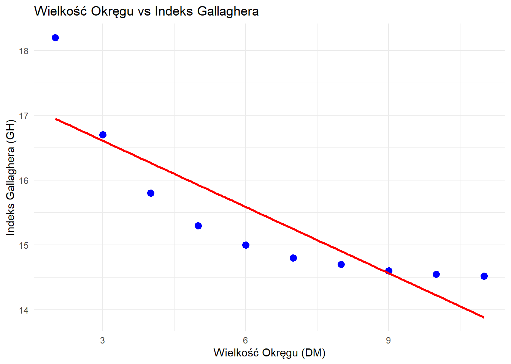

16 Wprowadzenie do Analizy Korelacji i Regresji
16.1 Statystyka dwuwymiarowa - wprowadzenie
Statystyka dwuwymiarowa pozwala na badanie związków między dwiema zmiennymi, umożliwiając ilościowe określenie i wizualizację, jak zmiany jednej zmiennej wiążą się ze zmianami drugiej. Metody te stanowią fundament wielu zaawansowanych technik statystycznych i zastosowań w praktyce badawczej.
Omówimy kilka kluczowych miar, zaczynając od kowariancji - podstawowej miary współzmienności dwóch zmiennych - przechodząc do bardziej interpretowalnych miar, takich jak współczynniki korelacji i analiza regresji.
16.2 Badanie zależności między zmiennymi w naukach społecznych
W tej części omówimy cztery podstawowe typy zależności między zmiennymi, często spotykane w badaniach społecznych. Każdy typ zilustrowany jest przykładem empirycznym, pokazującym, jak identyfikować, analizować i interpretować te wzorce.
16.2.1 Analiza zależności między zmiennymi
16.2.1.1 Korelacja dodatnia: Wykształcenie a dochód
Ta zależność przedstawia dodatnią korelację liniową (r ≈ 0,70, p < 0,001), gdzie zmienne rosną razem w stały sposób. Współczynnik regresji wskazuje, że każdy dodatkowy rok edukacji odpowiada wzrostowi rocznego dochodu o około 3 500 zł (β = 3500).
Kluczowe cechy:
- Kierunek: Dodatni (wraz ze wzrostem wykształcenia rośnie dochód)
- Forma: Liniowa (stała szybkość zmian)
- Siła: Silna (r > 0,7)
- Istotność statystyczna: p < 0,001
16.2.1.2 Korelacja ujemna: Izolacja społeczna a dobrostan psychiczny
Ten przykład ilustruje ujemną korelację liniową (r ≈ -0,75, p < 0,001), gdzie wzrost jednej zmiennej wiąże się ze spadkiem drugiej. Model regresji pokazuje, że każdy punkt wzrostu w skali izolacji społecznej wiąże się ze spadkiem dobrostanu psychicznego o 4 punkty (β = -4).
Kluczowe cechy:
- Kierunek: Ujemny (wraz ze wzrostem izolacji spada dobrostan)
- Forma: Liniowa (stała szybkość zmian)
- Siła: Silna (|r| > 0,7)
- Istotność statystyczna: p < 0,001
16.2.1.3 Brak korelacji: Polaryzacja polityczna a mobilność ekonomiczna
Ten zbiór danych pokazuje zmienne bez znaczącego związku (r ≈ 0,05, p > 0,5). Wykres rozrzutu przedstawia punkty rozmieszczone losowo, a linia regresji jest prawie pozioma, co wskazuje na brak związku predykcyjnego między polaryzacją polityczną regionu a jego mobilnością ekonomiczną.
Kluczowe cechy:
- Kierunek: Brak wyraźnego kierunku
- Forma: Brak wzorca
- Siła: Znikoma (|r| < 0,1)
- Istotność statystyczna: Nieistotna (p > 0,05)
16.2.1.4 Zależność nieliniowa: Korzystanie z mediów społecznościowych a satysfakcja z życia
Ten przykład przedstawia zależność krzywoliniową (kwadratową), gdzie satysfakcja z życia początkowo rośnie przy umiarkowanym korzystaniu z mediów społecznościowych, osiąga maksimum przy około 2-3 godzinach dziennie, a następnie spada przy nadmiernym korzystaniu. Współczynnik korelacji liniowej (r ≈ -0,60) zniekształca ten związek, podczas gdy model kwadratowy zapewnia znacznie lepsze dopasowanie (R² ≈ 0,75).
Kluczowe cechy: - Kierunek: Zmienny (najpierw dodatni, potem ujemny) - Forma: Nieliniowa (zmienna szybkość zmian) - Korelacja liniowa: Nieodpowiednia miara - Model kwadratowy: Statystycznie istotny (p < 0,001)
16.2.2 Aspekty metodologiczne analizy korelacji
- Interpretacja korelacji
- Współczynniki korelacji (r) przyjmują wartości od -1 do +1
- |r| < 0,3: Słaba zależność
- 0,3 ≤ |r| < 0,7: Umiarkowana zależność
- |r| ≥ 0,7: Silna zależność
- Zawsze należy oceniać istotność statystyczną (zwykle za pomocą wartości p)
- Niezależność statystyczna
- Obserwacje powinny być niezależne od siebie
- Należy zachować ostrożność w przypadku powtarzanych pomiarów, szeregów czasowych lub danych zagnieżdżonych
- Niezależność wpływa na wiarygodność testów istotności statystycznej
- Zmienne zakłócające
- Kontrola potencjalnych zmiennych zakłócających poprzez:
- Analiza regresji wielorakiej
- Współczynniki korelacji cząstkowej
- Dopasowanie wyników metodą propensity score
- Analiza warstwowa
- Kontrola potencjalnych zmiennych zakłócających poprzez:
- Ocena przyczynowości
- Korelacja nie implikuje przyczynowości
- Wzmocnienie wnioskowania przyczynowego poprzez:
- Plany eksperymentalne z losowym przydziałem
- Badania podłużne z pierwszeństwem czasowym
- Modelowanie równań strukturalnych
- Eksperymenty naturalne i zmienne instrumentalne
16.3 Rozróżnienie między Korelacją a Przyczynowością [Zob. np. https://www.tylervigen.com/spurious-correlations]
Zależności statystyczne między zmiennymi stanowią jeden z najczęściej błędnie interpretowanych aspektów analizy danych. Mimo że korelacje mogą ujawniać wzorce w danych, wymagają starannej interpretacji, aby uniknąć wyciągania nieprawidłowych wniosków przyczynowych. Przeanalizujmy to zagadnienie na przykładach.
16.4 Od korelacji do przyczynowości
Jednym z najważniejszych rozróżnień w analizie statystycznej jest różnica między korelacją a przyczynowością. O ile identyfikacja korelacji jest stosunkowo prosta, ustalenie związków przyczynowych wymaga bardziej zaawansowanych metod. Ta część materiału omawia, jak badacze mogą przejść od obserwacji statystycznych zależności do formułowania uzasadnionych twierdzeń o charakterze przyczynowym.
16.4.1 Kluczowe zjawiska w problematyce pozornych korelacji
Analizując dane pod kątem zależności przyczynowych, badacze społeczni powinni być świadomi trzech szczególnie istotnych zjawisk prowadzących do błędnych wniosków:
16.4.1.1 Koincydencja losowa
Koincydencja losowa występuje, gdy dwie zmienne wykazują statystycznie istotną korelację wyłącznie przez przypadek, bez jakiegokolwiek związku przyczynowego czy wspólnej przyczyny.
Przykład: Badacze odkryli silną korelację (r = 0,93) między liczbą bocianów w regionach Polski a liczbą urodzeń. Ta korelacja wynika z faktu, że obie zmienne są związane z obszarami wiejskimi, a nie z bezpośredniego związku przyczynowego.
Jak rozpoznać:
- Brak wiarygodnego mechanizmu łączącego zmienne
- Korelacja nie utrzymuje się przy ponownych pomiarach lub w innych próbach
- Zależność znika po uwzględnieniu innych zmiennych
Rozwiązanie: Stosowanie korekty na wielokrotne porównania (np. poprawka Bonferroniego), replikacja badań na nowych próbach, ocena wiarygodności teoretycznej.
16.4.1.2 Odwrócona przyczynowość
Odwrócona przyczynowość pojawia się, gdy badacz prawidłowo identyfikuje istnienie związku przyczynowego między zmiennymi, ale błędnie określa kierunek tej relacji.
Przykład: Badania wykazują, że osoby z wyższym poziomem lęku częściej stosują techniki relaksacyjne. Błędny wniosek: techniki relaksacyjne powodują lęk. Prawidłowy wniosek: osoby z wyższym poziomem lęku częściej sięgają po techniki relaksacyjne jako metodę radzenia sobie.
Jak rozpoznać:
- Brak logicznego mechanizmu dla zaproponowanego kierunku
- Trudności w ustaleniu sekwencji czasowej
- Wyniki sprzeczne z dotychczasową wiedzą teoretyczną
Rozwiązanie: Projektowanie badań podłużnych, analiza chronologiczna (sekwencji zdarzeń), eksperymenty z manipulacją zmienną niezależną.
16.4.1.3 Zmienne zakłócające
Zmienne zakłócające (ang. confounding variables) tworzą pozorne zależności lub maskują rzeczywiste związki poprzez jednoczesny wpływ na zmienną niezależną i zależną. To zjawisko zostało już częściowo omówione wcześniej, ale warto podkreślić jego różne przejawy.
Typy efektów zmiennych zakłócających:
Efekt maskujący – zmienna zakłócająca ukrywa rzeczywisty związek > Przykład: Brak korelacji między aktywnością fizyczną a zdrowiem w badaniu osób starszych, ponieważ osoby z wcześniejszymi problemami zdrowotnymi (zmienna zakłócająca) jednocześnie ćwiczą więcej (dla zdrowia) i mają gorsze wyniki zdrowotne.
Efekt pozorny – zmienna zakłócająca tworzy nieistniejący związek > Przykład: Pozorna korelacja między spożyciem lodów a liczbą utonięć. Rzeczywistym czynnikiem jest temperatura powietrza, która zwiększa zarówno konsumpcję lodów, jak i aktywność nad wodą.
Efekt wzmacniający/osłabiający – zmienna zakłócająca zmienia siłę rzeczywistej relacji > Przykład: Związek między wykształceniem a dochodami jest silniejszy w miastach niż na wsi (lokalizacja jako zmienna zakłócająca).
Rozwiązanie: Randomizacja w badaniach eksperymentalnych, stratyfikacja, metody statystyczne (np. regresja wieloraka, analiza ścieżek, propensity score matching), kontrola zmiennych zakłócających już na etapie projektowania badania.
16.4.1.4 Błąd kolidera (Collider Bias)
Błąd kolidera to specyficzne zjawisko występujące, gdy kontrolujemy zmienną będącą wspólnym skutkiem (tzw. “koliderem”) dwóch innych zmiennych. Paradoksalnie, takie działanie może wprowadzić sztuczną korelację między zmiennymi, które w rzeczywistości są od siebie niezależne.
Schemat zależności:
Inteligencja → → → → → → → → → → → → → → → → → → → →
↘
Przyjęcie na studia
↗
Zamożność rodziny → → → → → → → → → → → → → → → → → →W populacji ogólnej inteligencja i zamożność rodziny mogą być nieskorelowane. Jednak gdy badamy tylko studentów przyjętych na uczelnię (kolider), może pojawić się negatywna korelacja: wśród przyjętych, osoby mniej zamożne często mają wyższą inteligencję, a osoby zamożniejsze mogą mieć niższą inteligencję, ponieważ obie cechy “rekompensują się” w procesie selekcji.
Przykład z polskich badań społecznych: Badając ludzi hospitalizowanych z powodu COVID-19, zauważono ujemną korelację między wiekiem a ciężkością chorób współistniejących. Wydawało się to przeczyć wiedzy medycznej (starszy wiek zwykle wiąże się z większą liczbą chorób). Wyjaśnienie: hospitalizacja była “koliderem” – młodsze osoby trafiały do szpitala tylko w przypadku ciężkich chorób współistniejących, podczas gdy osoby starsze hospitalizowano z powodu COVID-19 nawet przy mniejszej liczbie chorób towarzyszących.
Jak rozpoznać:
- Analiza dotyczy wyselekcjonowanej podgrupy populacji
- Zmienna, według której dokonano selekcji, jest potencjalnie zależna od innych badanych zmiennych
- Obserwowane korelacje są nieoczekiwane lub sprzeczne z ustaloną wiedzą
Rozwiązanie: Modelowanie przyczynowe (np. grafy skierowane acykliczne), unikanie kontrolowania zmiennych będących skutkami, badanie pełnej populacji zamiast wyselekcjonowanych grup, gdy to możliwe.
Mechanizmy pozornych korelacji
Korelacje mogą wydawać się znaczące, podczas gdy w rzeczywistości wynikają z artefaktów statystycznych lub ukrytych czynników. Rozpoznanie tych wzorców pomaga badaczom uniknąć wyciągania fałszywych wniosków. Poniżej przedstawiono główne mechanizmy tworzące mylące korelacje:
16.4.1.5 Zmienne zakłócające
Zmienna zakłócająca wpływa zarówno na zmienną niezależną, jak i zależną, tworząc pozorną relację, która znika po kontroli czynnika zakłócającego.
Przykład: Badanie wykazuje, że spożycie kawy koreluje ze zwiększonym ryzykiem raka płuc. Jednak ta zależność znika po uwzględnieniu palenia tytoniu—osoby palące często piją więcej kawy, a palenie powoduje raka płuc.
Schemat zależności:
Palenie tytoniu
↗ ↘
Kawa → → → → Rak płucW tej relacji palenie wpływa zarówno na spożycie kawy, jak i ryzyko raka płuc, tworząc pozorną korelację między kawą a rakiem.
Strategia rozwiązania: Zastosowanie analizy wielozmiennowej do kontroli potencjalnych zmiennych zakłócających lub implementacja stratyfikacji w celu wyizolowania badanej relacji.


16.4.1.6 Autokorelacja czasowa
Zmienne, które wykazują trendy w czasie, często silnie korelują, nawet gdy nie istnieje między nimi związek przyczynowy. To zjawisko może tworzyć liczne fałszywe korelacje.
Przykład: Wyniki czytelnicze uczniów w województwie łódzkim i małopolskim poprawiły się w ciągu ostatniej dekady. Istnieje silna korelacja między tymi trendami, ale nie oznacza to, że programy alfabetyzacji w Łodzi wpływają na dzieci w Krakowie—oba wskaźniki po prostu niezależnie poprawiały się w czasie.
Strategia rozwiązania: Usunięcie trendu z szeregów czasowych poprzez analizę zmian, a nie wartości bezwzględnych, lub uwzględnienie czasu jako zmiennej kontrolnej w modelach regresji.
16.4.1.7 Błąd jednoczesnej przyczynowości
Gdy zmienne wpływają na siebie nawzajem, standardowa analiza korelacji nie identyfikuje kierunku ani siły poszczególnych ścieżek przyczynowych.
Przykład: Korzystanie z mediów społecznościowych i depresja wykazują korelację, ale przyczynowość jest dwukierunkowa—depresja może prowadzić do zwiększonego korzystania z mediów społecznościowych, podczas gdy nadmierne korzystanie z mediów społecznościowych może przyczyniać się do depresji.
Strategia rozwiązania: Wdrożenie badań podłużnych z wieloma punktami pomiarowymi lub wykorzystanie zmiennych instrumentalnych do wyizolowania efektów kierunkowych.
16.4.2 Metody statystyczne wnioskowania przyczynowego
O ile analiza korelacji identyfikuje wzorce, ustalenie przyczynowości wymaga specjalistycznych metod, które kontrolują czynniki zakłócające i izolują konkretne relacje. Oto niektóre istotne podejścia stosowane przez badaczy społecznych:
16.4.2.1 Plan eksperymentalny: Złoty standard
Randomizowane badania kontrolowane (RCT) dostarczają najsilniejszych dowodów na przyczynowość poprzez losowe przydzielanie uczestników do grup eksperymentalnych i kontrolnych, zapewniając, że wszelkie systematyczne różnice w wynikach można przypisać interwencji.
Przykład: Aby przetestować, czy nowa metoda nauczania poprawia wyniki w nauce, badacze losowo przydzielają uczniów do grupy z nową metodą lub z tradycyjnym nauczaniem, a następnie porównują wyniki testów, kontrolując początkowy poziom umiejętności.
Główne zalety:
- Eliminuje błąd selekcji
- Kontroluje znane i nieznane czynniki zakłócające
- Pozwala na precyzyjne oszacowanie efektów interwencji
Ograniczenia:
- Nie zawsze etyczne lub wykonalne w badaniach społecznych
- Może mieć ograniczoną trafność zewnętrzną
- Może być kosztowne i czasochłonne
16.4.2.2 Zmienne instrumentalne: Poszukiwanie naturalnych eksperymentów
Ta metoda wykorzystuje zmienną (tzw. “instrument”), która wpływa na zmienną niezależną, ale oddziałuje na wynik tylko poprzez swój wpływ na zmienną niezależną, tworząc naturalny eksperyment.
Przykład: Aby zbadać wpływ edukacji na dochody, badacze mogą wykorzystać odległość do najbliższej uczelni wyższej jako zmienną instrumentalną, ponieważ wpływa ona na poziom wykształcenia, ale prawdopodobnie wpływa na dochody tylko poprzez swój wpływ na edukację.
Implementacja:
- Identyfikacja zmiennej, która silnie koreluje ze zmienną niezależną
- Upewnienie się, że instrument wpływa na wynik tylko poprzez zmienną niezależną
- Zastosowanie dwustopniowej metody najmniejszych kwadratów do oszacowania efektów przyczynowych
16.4.2.3 Regresja nieciągła: Wykorzystanie progów
Ten plan badawczy wykorzystuje sytuacje, w których przypisanie do interwencji zmienia się gwałtownie przy określonym progu, tworząc porównywalne grupy po obu stronach punktu odcięcia.
Przykład: Badanie wpływu programów stypendialnych poprzez porównanie studentów z wynikami tuż powyżej i tuż poniżej progu średniej ocen wymaganej do uzyskania stypendium.
Kiedy stosować:
- Gdy kwalifikowalność do polityki lub programu zależy od wyraźnej wartości progowej
- Gdy uczestnicy nie mogą precyzyjnie manipulować swoją pozycją względem progu
- Gdy istnieją wystarczające dane wokół punktu odcięcia
16.4.3 Krytyczna analiza korelacji
Oceniając wyniki korelacyjne, warto zastosować systematyczne podejście do oceny potencjalnych związków przyczynowych:
16.4.3.1 Teoretyczna wiarygodność
Zbadaj, czy istnieje logiczny mechanizm wyjaśniający, w jaki sposób jedna zmienna wpływa na drugą.
Pytanie, które warto zadać: “Czy istnieje wiarygodny model teoretyczny wyjaśniający, jak X może powodować Y?”
Przykład: Korelacja między poziomem wykształcenia a stanem zdrowia jest teoretycznie wiarygodna, ponieważ edukacja może dostarczać wiedzy o zdrowych zachowaniach, wyższych dochodach na lepszą opiekę zdrowotną oraz sieci społecznych, które promują dobrostan.
16.4.3.2 Pierwszeństwo czasowe
Sprawdź, czy proponowana przyczyna występuje przed skutkiem w czasie—fundamentalny wymóg przyczynowości.
Pytanie, które warto zadać: “Czy X konsekwentnie poprzedza Y w czasie?”
Przykład: W badaniach podłużnych dotyczących palenia i raka płuc, zachowanie związane z paleniem poprzedza diagnozę raka, co wspiera interpretację przyczynową.
16.4.3.3 Zależność dawka-reakcja
Oceń, czy zmiany w natężeniu proponowanej przyczyny odpowiadają proporcjonalnym zmianom w efekcie.
Pytanie, które warto zadać: “Czy więcej X prowadzi do większego Y w spójnym wzorcu?”
Przykład: Badania pokazują, że wraz ze wzrostem poziomów zanieczyszczenia powietrza, problemy oddechowe wzrastają proporcjonalnie, wzmacniając argument za przyczynowością.
16.4.3.4 Spójność w różnych kontekstach
Oceń, czy relacja utrzymuje się w różnych populacjach, środowiskach i podejściach pomiarowych.
Pytanie, które warto zadać: “Czy zależność jest konsekwentnie obserwowana w różnych badaniach, populacjach i metodologiach?”
Przykład: Związek między bezrobociem a problemami zdrowia psychicznego pojawia się konsekwentnie w różnych kulturach, systemach ekonomicznych i podejściach pomiarowych.
16.4.3.5 Alternatywne wyjaśnienia
Systematycznie rozważ i przetestuj alternatywne wyjaśnienia zaobserwowanej korelacji.
Pytanie, które warto zadać: “Jakie inne czynniki mogłyby wyjaśnić zaobserwowaną relację i jak możemy przetestować te alternatywy?”
Przykład: Zanim wyciągniemy wniosek, że cechy sąsiedztwa powodują wskaźniki przestępczości, badacze muszą rozważyć i kontrolować takie czynniki jak ubóstwo, możliwości edukacyjne i historyczne wzorce.
16.4.4 Od asocjacji do przyczynowości
Pamiętaj o tych kluczowych zasadach podczas analizy danych korelacyjnych:
- Korelacja jest konieczna, ale niewystarczająca do ustalenia przyczynowości
- Wiele uzupełniających się metod wzmacnia wnioskowanie przyczynowe
- Triangulacja z różnych źródeł danych zwiększa pewność co do twierdzeń przyczynowych
- Przejrzystość dotycząca ograniczeń jest niezbędna dla rzetelności naukowej
Najbardziej solidne badania łączą silne podstawy teoretyczne z wieloma podejściami metodologicznymi, aby budować przekonujące dowody na istnienie związków przyczynowych, nawet gdy prawdziwe eksperymenty nie są możliwe.
16.4.4.1 Wzorce Sezonowe i Pozorne Korelacje

Ta wizualizacja przedstawia klasyczny przykład zmiennej zakłócającej w analizie statystycznej. Pozorna korelacja między sprzedażą lodów a wskaźnikiem przestępczości (r = 0,85, p < 0,001) pokazuje, jak wahania sezonowe mogą tworzyć mylące zależności statystyczne. Korelacja wynika ze wspólnego czynnika przyczynowego: sezonowych zmian temperatury, które niezależnie wpływają na obie zmienne poprzez odrębne mechanizmy.
16.4.4.2 Trendy Czasowe i Pozorne Związki

Ta druga analiza ilustruje błąd korelacji czasowej, gdzie dwa niezależnie malejące trendy tworzą sztuczny związek statystyczny. Pomimo silnego współczynnika korelacji (r = 0,91, p < 0,001), nie istnieje żaden wiarygodny mechanizm przyczynowy łączący te zmienne.
16.4.5 Kowariancja
Kowariancja mierzy, jak dwie zmienne są powiązane (zmieniają się razem).
Wzór: cov(X,Y) = \frac{\sum_{i=1}^n (x_i - \bar{x})(y_i - \bar{y})}{n - 1}
Od Kowariancji do Różnych Miar Korelacji
library(ggplot2)
library(gridExtra)
# Generowanie różnych typów zależności
set.seed(123)
n <- 100
# Zależność liniowa
x1 <- rnorm(n)
y1 <- 0.8*x1 + rnorm(n, sd=0.5)
data1 <- data.frame(x=x1, y=y1, type="Zależność Liniowa")
# Zależność monotoniczna nieliniowa
x2 <- rnorm(n)
y2 <- sign(x2)*(x2^2) + rnorm(n, sd=0.5)
data2 <- data.frame(x=x2, y=y2, type="Monotoniczna Nieliniowa")
# Zależność niemonotoniczna
x3 <- seq(-3, 3, length.out=n)
y3 <- x3^2 + rnorm(n, sd=0.5)
data3 <- data.frame(x=x3, y=y3, type="Niemonotoniczna")
# Łączenie danych
all_data <- rbind(data1, data2, data3)
# Tworzenie wykresu
ggplot(all_data, aes(x = x, y = y)) +
geom_point(alpha = 0.6) +
facet_wrap(~type, scales = "free") +
labs(title = "Różne Typy Zależności Między Zmiennymi",
x = "Zmienna X",
y = "Zmienna Y") +
theme_minimal() +
theme(
plot.title = element_text(size = 14, face = "bold"),
strip.text = element_text(size = 12),
panel.grid.minor = element_blank()
)
16.4.6 Pojęcie Korelacji
Korelacja to szerokie pojęcie opisujące, jak zmienne są ze sobą powiązane. Jak widać na wykresach, zależności te mogą przybierać różne formy.
16.4.7 Rozpoczynając od Kowariancji
Kowariancja jest podstawową miarą wspólnej zmienności zmiennych:
Cov(X,Y) = \frac{\sum(x_i - \bar{x})(y_i - \bar{y})}{n-1}
Informuje nas o tym:
- Czy zmienne zmieniają się w tym samym kierunku (kowariancja dodatnia)
- Czy zmieniają się w przeciwnych kierunkach (kowariancja ujemna)
- Czy brak wyraźnego wzorca liniowego (kowariancja bliska zeru)
Jednak kowariancja ma ograniczenie: jej wartość zależy od jednostek pomiaru. Na przykład:
- Wzrost w metrach vs waga w kg daje jedną wartość kowariancji
- Wzrost w centymetrach vs waga w kg daje inną wartość
- Ta sama zależność, różne skale!
16.4.8 Standaryzacja i Miary Korelacji
- Współczynnik korelacji Pearsona standaryzuje kowariancję: r = \frac{Cov(X,Y)}{\sqrt{Var(X)Var(Y)}}
- Eliminuje zależność od jednostek
- Zawsze między -1 a 1
- Mierzy zależności liniowe
- Współczynnik korelacji rangowej Spearmana:
- Bazuje na rangach zamiast surowych wartości
- Wychwytuje zależności monotoniczne (także nieliniowe)
- Również przyjmuje wartości od -1 do 1
16.4.9 Kluczowe Wnioski
- Kowariancja pokazuje wspólną zmienność
- Miary korelacji dają standaryzowane wartości
- Wybór miary korelacji zależy od:
- Spodziewanego typu zależności
- Charakteru danych
- Pytania badawczego
- Zawsze wizualizuj dane
Rangi: Pozycje w Uporządkowanym Ciągu
Rangi to po prostu numery pozycji w uporządkowanym zbiorze danych:
16.4.10 Jak Wyznaczyć Rangi?
Porządkujemy dane od najmniejszej do największej wartości
Przypisujemy kolejne liczby naturalne:
- Najmniejsza wartość → ranga 1
- Kolejne wartości → kolejne rangi
- Największa wartość → ranga n (liczba obserwacji)
- Dla remisów → średnia rang
16.4.11 Przykład
Mamy 5 studentów o wzroście:
Wzrost: 165, 182, 170, 168, 175
Rangi: 1, 5, 3, 2, 4Dla danych z remisami (np. oceny):
Oceny: 2, 3, 3, 4, 5
Rangi: 1, 2.5, 2.5, 4, 5Przykład Ręcznego Obliczenia:
Obliczmy kowariancję dla dwóch zmiennych:
- x: 1, 2, 3, 4, 5
- y: 2, 4, 5, 4, 5
| Krok | Opis | Obliczenie |
|---|---|---|
| 1 | Oblicz średnie | \bar{x} = 3, \bar{y} = 4 |
| 2 | Oblicz (x_i - \bar{x})(y_i - \bar{y}) dla każdej pary | (-2)(-2) = 4 |
| (-1)(0) = 0 | ||
| (0)(1) = 0 | ||
| (1)(0) = 0 | ||
| (2)(1) = 2 | ||
| 3 | Zsumuj wyniki | 4 + 0 + 0 + 0 + 2 = 6 |
| 4 | Podziel przez (n-1) | 6 / 4 = 1,5 |
Obliczenie w R:
x <- c(1, 2, 3, 4, 5)
y <- c(2, 4, 5, 4, 5)
cov(x, y)[1] 1.5Interpretacja: - Dodatnia kowariancja (1,5) wskazuje, że x i y mają tendencję do wzrostu razem.
Zalety:
- Dostarcza informacji o kierunku związku (dodatni lub ujemny)
- Przydatna w obliczaniu innych miar, takich jak korelacja
Wady:
- Zależna od skali, co utrudnia porównywanie między różnymi parami zmiennych
- Nie dostarcza informacji o sile związku
16.4.12 Korelacja Pearsona
Korelacja Pearsona mierzy siłę i kierunek liniowego związku między dwiema zmiennymi ciągłymi.
Wzór: r = \frac{cov(X,Y)}{s_X s_Y} = \frac{\sum (x_i - \bar{x})(y_i - \bar{y})}{\sqrt{\sum (x_i - \bar{x})^2 \sum (y_i - \bar{y})^2}}
Przykład Ręcznego Obliczenia:
Używając tych samych danych co wyżej:
| Krok | Opis | Obliczenie |
|---|---|---|
| 1 | Oblicz kowariancję | (Z poprzedniego obliczenia) 1,5 |
| 2 | Oblicz odchylenia standardowe | s_X = \sqrt{\frac{10}{4}} = 1,58, s_Y = \sqrt{\frac{6}{4}} = 1,22 |
| 3 | Podziel kowariancję przez iloczyn odchyleń standardowych | 1,5 / (1,58 * 1,22) = 0,7746 |
Obliczenie w R:
cor(x, y, method = "pearson")[1] 0.7745967Interpretacja: - Współczynnik korelacji 0,7746 wskazuje na silny dodatni związek liniowy między x i y.
Zalety:
- Niezależna od skali, zawsze między -1 a 1
- Szeroko rozumiana i stosowana
- Testuje związki liniowe
Wady:
- Wrażliwa na wartości odstające
- Mierzy tylko związki liniowe
- Zakłada normalnie rozłożone zmienne
16.4.13 Korelacja Spearmana
Korelacja Spearmana mierzy siłę i kierunek monotonicznego związku między dwiema zmiennymi, które mogą być ciągłe lub porządkowe.
Wzór: \rho = 1 - \frac{6 \sum d_i^2}{n(n^2 - 1)}, gdzie d_i to różnica między rangami.
Przykład Ręcznego Obliczenia:
Użyjmy nieco innych danych:
- x: 1, 2, 3, 4, 5
- y: 1, 3, 2, 5, 4
| Krok | Opis | Obliczenie |
|---|---|---|
| 1 | Przypisz rangi obu zmiennym | x_ranga: 1, 2, 3, 4, 5 |
| y_ranga: 1, 3, 2, 5, 4 | ||
| 2 | Oblicz różnice w rangach (d) | 0, -1, 1, -1, 1 |
| 3 | Podnieś różnice do kwadratu | 0, 1, 1, 1, 1 |
| 4 | Zsumuj kwadraty różnic | \sum d_i^2 = 4 |
| 5 | Zastosuj wzór | \rho = 1 - \frac{6(4)}{5(5^2 - 1)} = 0,8 |
Obliczenie w R:
x <- c(1, 2, 3, 4, 5)
y <- c(1, 3, 2, 5, 4)
cor(x, y, method = "spearman")[1] 0.8Interpretacja: - Korelacja Spearmana 0,8 wskazuje na silny dodatni związek monotoniczny między x i y.
Zalety:
- Odporna na wartości odstające
- Może wykrywać nieliniowe związki monotoniczne
- Odpowiednia dla danych porządkowych
Wady:
- Mniej odporna niż korelacja Pearsona do wykrywania związków liniowych w normalnie rozłożonych danych
- Nie dostarcza informacji o kształcie związku poza monotonicznością
16.4.14 Tabela Krzyżowa
Tabela krzyżowa (tabela kontyngencji) pokazuje związek między dwiema zmiennymi kategorycznymi.
Przykład:
Stwórzmy tabelę krzyżową dla dwóch zmiennych: - Poziom wykształcenia: Średnie, Wyższe, Podyplomowe - Status zatrudnienia: Zatrudniony, Bezrobotny
wyksztalcenie <- factor(c("Średnie", "Wyższe", "Podyplomowe", "Średnie", "Wyższe", "Podyplomowe", "Średnie", "Wyższe", "Podyplomowe"))
zatrudnienie <- factor(c("Zatrudniony", "Zatrudniony", "Zatrudniony", "Bezrobotny", "Zatrudniony", "Zatrudniony", "Bezrobotny", "Bezrobotny", "Zatrudniony"))
table(wyksztalcenie, zatrudnienie) zatrudnienie
wyksztalcenie Bezrobotny Zatrudniony
Podyplomowe 0 3
Średnie 2 1
Wyższe 1 2Interpretacja:
- Ta tabela pokazuje liczbę osób w każdej kombinacji poziomu wykształcenia i statusu zatrudnienia.
- Na przykład, możemy zobaczyć, ilu absolwentów szkół średnich jest zatrudnionych, a ilu bezrobotnych.
Zalety:
- Zapewnia jasną wizualną reprezentację związku między zmiennymi kategorycznymi
- Łatwa do zrozumienia i interpretacji
- Podstawa dla wielu testów statystycznych (np. test chi-kwadrat niezależności)
Wady:
- Ograniczona do danych kategorycznych
- Może stać się nieporęczna przy wielu kategoriach
- Nie dostarcza pojedynczej statystyki podsumowującej siłę związku
16.4.15 Wybór Odpowiedniej Miary
Przy wyborze statystyki dwuwymiarowej należy wziąć pod uwagę:
Typ danych:
- Dane ciągłe: Kowariancja, korelacja Pearsona
- Dane porządkowe: Korelacja Spearmana
- Dane kategoryczne: Tabela krzyżowa
Typ związku:
- Liniowy: Korelacja Pearsona
- Monotoniczny, ale potencjalnie nieliniowy: Korelacja Spearmana
Obecność wartości odstających:
- Jeśli wartości odstające są problemem, korelacja Spearmana jest bardziej odporna
Rozkład:
- Dla normalnie rozłożonych danych korelacja Pearsona jest najbardziej odporna (robust)
- Dla rozkładów “nienormalnych” rozważ korelację Spearmana
Wielkość próby:
- Dla bardzo małych prób metody nieparametryczne, takie jak korelacja Spearmana, mogą być preferowane
Pamiętaj, że często wartościowe jest użycie wielu miar i wizualizacji (takich jak wykresy rozrzutu), aby uzyskać kompleksowe zrozumienie związku między zmiennymi.
16.5 Wprowadzenie do Podstawowej Statystyki Wielowymiarowej (*)
Statystyki wielowymiarowe obejmują analizę związków między trzema lub więcej zmiennymi jednocześnie. Ta sekcja wprowadzi niektóre podstawowe koncepcje i techniki analizy wielowymiarowej, koncentrując się na metodach opartych na korelacji.
16.5.1 Macierz Korelacji
Macierz korelacji to tabela pokazująca korelacje parami dla kilku zmiennych. Jest to podstawowe narzędzie w analizie wielowymiarowej.
Przykład: Stwórzmy macierz korelacji dla czterech zmiennych: wzrost, waga, wiek i dochód.
set.seed(123) # Dla powtarzalności
wzrost <- rnorm(100, 170, 10)
waga <- wzrost * 0.5 + rnorm(100, 0, 5)
wiek <- rnorm(100, 40, 10)
dochod <- wiek * 1000 + rnorm(100, 0, 10000)
dane <- data.frame(wzrost, waga, wiek, dochod)
macierz_kor <- cor(dane)
print(macierz_kor) wzrost waga wiek dochod
wzrost 1.0000000 0.66712996 -0.12917601 -0.12246786
waga 0.6671300 1.00000000 -0.06814187 -0.04579492
wiek -0.1291760 -0.06814187 1.00000000 0.65654902
dochod -0.1224679 -0.04579492 0.65654902 1.00000000Interpretacja: - Każda komórka pokazuje korelację między dwiema zmiennymi. - Przekątna zawsze wynosi 1 (korelacja zmiennej z samą sobą). - Szukaj silnych korelacji (bliskich 1 lub -1), aby zidentyfikować potencjalne związki.
16.5.2 Wizualizacja Związków Wielowymiarowych
16.5.2.1 Macierz Wykresów Rozrzutu
Macierz wykresów rozrzutu pokazuje parami związki między wieloma zmiennymi.
pairs(dane)
Interpretacja:
- Każdy wykres pokazuje związek między dwiema zmiennymi.
- Elementy na przekątnej pokazują rozkład każdej zmiennej.
- Szukaj wzorców, skupisk lub trendów na wykresach.
16.5.2.2 Wykres Korelacji
Wykres korelacji zapewnia wizualną reprezentację macierzy korelacji.
library(corrplot)corrplot 0.95 loadedcorrplot(macierz_kor, method = "color")
Interpretacja:
- Intensywność koloru i rozmiar kół wskazują na siłę korelacji.
- Niebieskie kolory zazwyczaj wskazują na dodatnie korelacje, czerwone na ujemne.
16.5.3 Korelacja Cząstkowa
Korelacja cząstkowa mierzy związek między dwiema zmiennymi przy kontrolowaniu jednej lub więcej innych zmiennych.
Przykład: Obliczmy korelację cząstkową między wzrostem a wagą, kontrolując wiek.
library(ppcor)
pcor.test(dane$wzrost, dane$waga, dane$wiek) estimate p.value statistic n gp Method
1 0.6654367 5.758157e-14 8.779896 100 1 pearsonInterpretacja:
- Porównaj to z prostą korelacją między wzrostem a wagą.
- Znacząca zmiana może wskazywać, że wiek odgrywa rolę w związku między wzrostem a wagą.
16.5.4 Korelacja Wielokrotna
Korelacja wielokrotna mierzy siłę związku między zmienną zależną a wieloma zmiennymi niezależnymi.
Przykład: Przewidźmy wagę na podstawie wzrostu i wieku.
model <- lm(waga ~ wzrost + wiek, data = dane)
R <- sqrt(summary(model)$r.squared)
print(paste("Współczynnik korelacji wielokrotnej:", R))[1] "Współczynnik korelacji wielokrotnej: 0.667377840470434"Interpretacja:
- R waha się od 0 do 1, przy czym wyższe wartości wskazują na silniejsze związki.
- R² (R-kwadrat) reprezentuje proporcję wariancji w zmiennej zależnej wyjaśnioną przez zmienne niezależne.
16.6 Wprowadzenie do Analizy Regresji
Analiza regresji to metoda statystyczna, która bada i modeluje zależności między zmiennymi w celu zrozumienia, jak zmiany w jednej lub kilku zmiennych niezależnych wpływają na zmienną zależną.
W swojej istocie analiza regresji pomaga odpowiedzieć na pytania dotyczące przyczyny i skutku, przewidywania oraz prognozowania. Na przykład, przedsiębiorstwo może wykorzystać analizę regresji do zrozumienia, jak wydatki na reklamę wpływają na sprzedaż lub jak liczba godzin szkoleń pracowników przekłada się na produktywność.
Proces rozpoczyna się od zbierania danych o interesujących nas zmiennych. Następnie analiza dopasowuje model matematyczny - zazwyczaj linię lub krzywą - który najlepiej reprezentuje zależność między tymi zmiennymi. Model ten pozwala:
- Określić siłę i kierunek zależności między zmiennymi
- Dokonywać przewidywań dotyczących przyszłych wyników
- Zrozumieć, które czynniki mają największy wpływ na nasze rezultaty
16.6.1 Regresja jako Model Stochastyczny
W modelowaniu matematycznym spotykamy dwa podstawowe podejścia do opisywania relacji między zmiennymi:
- modele deterministyczne,
- modele stochastyczne.
16.6.1.1 Modele Deterministyczne a Stochastyczne
Model deterministyczny zakłada precyzyjną, ustaloną relację między danymi wejściowymi a wyjściowymi. W takich modelach, znając dane wejściowe, możemy z całkowitą pewnością obliczyć dokładny wynik. Weźmy pod uwagę klasyczne równanie fizyczne dotyczące drogi:
\text{Droga} = \text{Prędkość} × \text{Czas}
Przy określonych wartościach prędkości i czasu, równanie to zawsze da tę samą drogę. Nie ma tu miejsca na jakąkolwiek zmienność wyniku.
W przeciwieństwie do tego, analiza regresji uwzględnia naturalną zmienność danych. Podstawowa struktura modelu regresji to:
Y = f(X) + \epsilon
Gdzie:
- Y reprezentuje wynik, który chcemy przewidzieć
- f(X) reprezentuje systematyczną relację między naszymi predyktorami (X) a wynikiem
- \epsilon reprezentuje losową zmienność naturalnie występującą w rzeczywistych danych
16.6.1.2 Natura Modeli Stochastycznych w Regresji
Włączenie składnika błędu \epsilon uznaje, że rzeczywiste relacje między zmiennymi rzadko są idealne. Na przykład, badając wpływ czasu nauki na wyniki testów, wiele czynników przyczynia się do końcowego rezultatu:
Część systematyczna f(X) wychwytuje ogólną tendencję: więcej czasu nauki zazwyczaj prowadzi do wyższych wyników.
Składnik błędu \epsilon uwzględnia wszystkie inne czynniki:
- Różne style uczenia się
- Środowisko nauki
- Stan fizyczny i psychiczny podczas testu
- Jakość materiałów dydaktycznych
16.6.1.3 Struktura Matematyczna
W swojej najprostszej formie regresja liniowa może być wyrażona jako:
Y = \beta_0 + \beta_1X + \epsilon
Gdzie:
- \beta_0 reprezentuje wartość bazową (gdy X = 0)
- \beta_1 reprezentuje zmianę Y dla każdej jednostkowej zmiany X
- \epsilon reprezentuje naturalną zmienność wokół tej relacji
16.6.1.4 Implikacje Praktyczne
Zrozumienie regresji jako modelu stochastycznego ma istotne implikacje praktyczne:
Przewidywania: Uznajemy, że nasze przewidywania będą charakteryzować się pewną naturalną zmiennością. Zamiast twierdzić, że wynik będzie dokładny, uznajemy zakres prawdopodobnych wartości.
Ocena Modelu: Oceniamy modele na podstawie tego, jak dobrze ujmują zarówno ogólną tendencję, jak i typową wielkość zmienności w danych.
Podejmowanie Decyzji: Zrozumienie naturalnej zmienności w naszych przewidywaniach pomaga nam podejmować bardziej realistyczne plany i decyzje.
Zastosowania w Rzeczywistości
Rozważmy przewidywanie cen domów na podstawie metrażu. Model deterministyczny mógłby stwierdzić: “Dom o powierzchni 186 metrów kwadratowych będzie kosztować dokładnie 1 200 000 złotych”
Model regresji natomiast uznaje, że:
- Istnieje ogólna relacja między wielkością a ceną
- Ale wiele innych czynników wpływa na końcową cenę
- Podobne domy mogą być sprzedawane po nieco różnych cenach
- Nasze przewidywania powinny odzwierciedlać tę naturalną zmienność
Podsumowanie
Stochastyczna natura analizy regresji zapewnia bardziej realistyczne ramy do zrozumienia rzeczywistych relacji między zmiennymi.
Model Regresji Liniowej (MNK): Szybki Start
16.6.2 Koncepcja Modelu
Regresja MNK (Metoda Najmniejszych Kwadratów) to model statystyczny opisujący związek między zmiennymi. Dwa kluczowe założenia definiują ten model:
- Związek można opisać linią prostą (liniowość)
- Błędy w naszych przewidywaniach nie są systematycznie powiązane ze zmienną x (ścisła egzogeniczność)
16.6.3 Przykład: Edukacja i Wynagrodzenia
Rozważmy badanie wpływu edukacji (x) na wynagrodzenia (y). Powiedzmy, że szacujemy:
wynagrodzenia = \beta_0 + \beta_1 \cdot edukacja + \epsilon
Składnik błędu \epsilon zawiera wszystkie inne czynniki wpływające na wynagrodzenia. Ścisła egzogeniczność jest naruszona, jeśli pominiemy ważną zmienną, jak “zdolności”, która wpływa zarówno na edukację, jak i wynagrodzenia. Dlaczego? Ponieważ bardziej zdolni ludzie mają tendencję do zdobywania lepszego wykształcenia I wyższych wynagrodzeń, co powoduje zawyżenie szacowanego efektu edukacji.
library(ggplot2)
library(dplyr)
# Generate sample data
set.seed(123)
n <- 20
x <- seq(1, 10, length.out = n)
y <- 2 + 1.5 * x + rnorm(n, sd = 1.5)
data <- data.frame(x = x, y = y)
# Calculate OLS parameters
beta1 <- cov(x, y) / var(x)
beta0 <- mean(y) - beta1 * mean(x)
# Create alternative lines
lines_data <- data.frame(
intercept = c(beta0, beta0 + 1, beta0 - 1),
slope = c(beta1, beta1 + 0.3, beta1 - 0.3),
line_type = c("Best fit (OLS)", "Suboptimal 1", "Suboptimal 2")
)
# Create the plot
ggplot(data, aes(x = x, y = y)) +
geom_point(size = 3, alpha = 0.6) +
geom_abline(data = lines_data,
aes(intercept = intercept,
slope = slope,
color = line_type,
linetype = line_type),
size = 1) +
scale_color_manual(values = c("Best fit (OLS)" = "#FF4500",
"Suboptimal 1" = "#4169E1",
"Suboptimal 2" = "#228B22")) +
labs(title = "Finding the Best-Fitting Line",
subtitle = "Orange line minimizes the sum of squared errors",
x = "X Variable",
y = "Y Variable",
color = "Line Type",
linetype = "Line Type") +
theme_minimal() +
theme(
plot.title = element_text(size = 14, face = "bold"),
plot.subtitle = element_text(size = 12),
legend.position = "bottom",
panel.grid.minor = element_blank()
)Warning: Using `size` aesthetic for lines was deprecated in ggplot2 3.4.0.
ℹ Please use `linewidth` instead.
16.6.4 Problem Optymalizacji: Metoda Najmniejszych Kwadratów (OLS)
Kiedy analizujemy zależności między zmiennymi, takimi jak poziom wykształcenia a wynagrodzenie, potrzebujemy systematycznej metody znalezienia linii, która najlepiej odzwierciedla tę relację w naszych danych. Metoda Najmniejszych Kwadratów (OLS - Ordinary Least Squares) dostarcza nam takiego rozwiązania poprzez precyzyjne podejście matematyczne.
Spójrzmy na nasz wykres poziomów wykształcenia i wynagrodzeń. Każdy punkt reprezentuje rzeczywiste dane - poziom wykształcenia danej osoby i odpowiadające mu wynagrodzenie. Naszym celem jest znalezienie pojedynczej linii, która najdokładniej uchwyci podstawową zależność między tymi zmiennymi.
Dla każdej obserwacji i możemy wyrazić tę relację jako:
y_i = \beta_0 + \beta_1x_i + \epsilon_i
Gdzie:
- y_i to rzeczywiste zaobserwowane wynagrodzenie
- \hat{y_i} = \beta_0 + \beta_1x_i to przewidywane wynagrodzenie
- \epsilon_i = y_i - \hat{y_i} to składnik błędu (reszta)
Metoda OLS znajduje optymalne wartości dla \beta_0 i \beta_1 poprzez minimalizację sumy kwadratów błędów:
\min_{\beta_0, \beta_1} \sum \epsilon_i^2 = \min_{\beta_0, \beta_1} \sum(y_i - \hat{y_i})^2 = \min_{\beta_0, \beta_1} \sum(y_i - (\beta_0 + \beta_1x_i))^2
Analizując naszą wizualizację:
- Rozproszone punkty pokazują rzeczywiste obserwacje (x_i, y_i)
- Czerwona linia reprezentuje dopasowane wartości \hat{y_i}, które minimalizują \sum \epsilon_i^2
- Niebieska i zielona linia przedstawiają alternatywne dopasowania o większych sumach kwadratów błędów
- Pionowe odległości od każdego punktu do tych linii reprezentują błędy \epsilon_i
Rozwiązanie OLS dostarcza nam estymatorów \hat{\beta_0} i \hat{\beta_1} nieznanych parametrów \beta_0 i \beta_1, które minimalizują całkowity błąd kwadratowy, dając nam najdokładniejszą liniową reprezentację zależności między poziomem wykształcenia a wynagrodzeniem na podstawie dostępnych danych.
16.6.5 Znalezienie Najlepszej Linii
Rozwiązanie tego problemu minimalizacji daje nam:
\hat{\beta}_1 = \frac{\sum(x_i - \bar{x})(y_i - \bar{y})}{\sum(x_i - \bar{x})^2} = \frac{cov(X, Y)}{var(X)}
\hat{\beta}_0 = \bar{y} - \hat{\beta}_1\bar{x}
16.6.6 Kluczowe Punkty
- MNK znajduje linię, która minimalizuje kwadraty błędów predykcji
- Ta linia jest “najlepsza” pod względem dopasowania, ale może nie ujmować prawdziwych relacji, jeśli pominięto ważne zmienne
- W przykładzie edukacja-wynagrodzenia, pominięcie zdolności oznacza, że przypisujemy cały wzrost wynagrodzeń samej edukacji
16.6.7 Podstawowe Pojęcia i Terminologia
Ustalmy kluczowe terminy:
- Zmienna Zależna (Y):
- Wynik, który chcemy zrozumieć lub przewidzieć
- Nazywana również: zmienna odpowiedzi, zmienna docelowa
- Przykłady: wynagrodzenie, sprzedaż, wyniki egzaminów
- Zmienna Niezależna (X):
- Zmienna, która naszym zdaniem wpływa na Y
- Nazywana również: predyktor, zmienna objaśniająca, regresor
- Przykłady: lata edukacji, budżet reklamowy, godziny nauki
- Parametry Populacji (\beta):
- Prawdziwe podstawowe zależności, które chcemy zrozumieć
- Zazwyczaj nieznane w praktyce
- Przykłady: \beta_0 (prawdziwy wyraz wolny), \beta_1 (prawdziwe nachylenie)
- Oszacowania Parametrów (\hat{\beta}):
- Nasze najlepsze przypuszczenia dotyczące prawdziwych parametrów na podstawie danych
- Obliczane na podstawie danych próby
- Przykłady: \hat{\beta}_0 (oszacowany wyraz wolny), \hat{\beta}_1 (oszacowane nachylenie)
16.6.8 Główna Idea
Zobaczmy na przykładzie, co robi regresja:
# Generate some example data
set.seed(123)
x <- seq(1, 10, by = 0.5)
y <- 2 + 3*x + rnorm(length(x), 0, 2)
data <- data.frame(x = x, y = y)
# Fit the model
model <- lm(y ~ x, data = data)
# Create the plot
ggplot(data, aes(x = x, y = y)) +
geom_point(color = "blue", alpha = 0.6) +
geom_smooth(method = "lm", se = TRUE, color = "red") +
theme_minimal() +
labs(title = "Przykład Prostej Regresji Liniowej",
subtitle = "Punkty reprezentują dane, czerwona linia pokazuje dopasowanie regresji",
x = "Zmienna Niezależna (X)",
y = "Zmienna Zależna (Y)") +
theme(plot.title = element_text(face = "bold"))`geom_smooth()` using formula = 'y ~ x'
Ten wykres pokazuje istotę regresji:
- Każdy punkt reprezentuje obserwację (X, Y)
- Linia reprezentuje nasze najlepsze przypuszczenie dotyczące zależności
- Rozproszenie punktów wokół linii pokazuje niepewność
16.7 Model Regresji Liniowej
16.7.1 Model Populacyjny vs. Oszacowania z Próby
W teorii istnieje prawdziwa zależność populacyjna:
Y = \beta_0 + \beta_1X + \varepsilon
gdzie:
- \beta_0 to prawdziwy wyraz wolny populacji
- \beta_1 to prawdziwe nachylenie populacji
- \varepsilon to składnik losowy błędu
W praktyce pracujemy z danymi próby, aby oszacować tę zależność:
\hat{Y} = \hat{\beta}_0 + \hat{\beta}_1X
Zobaczmy wizualizację różnicy między zależnościami populacyjnymi a próbkowymi:
# Generate population data
set.seed(456)
x_pop <- seq(1, 10, by = 0.1)
true_relationship <- 2 + 3*x_pop # True β₀=2, β₁=3
y_pop <- true_relationship + rnorm(length(x_pop), 0, 2)
# Create several samples
sample_size <- 30
samples <- data.frame(
x = rep(sample(x_pop, sample_size), 3),
sample = rep(1:3, each = sample_size)
)
samples$y <- 2 + 3*samples$x + rnorm(nrow(samples), 0, 2)
# Fit models to each sample
models <- samples %>%
group_by(sample) %>%
summarise(
intercept = coef(lm(y ~ x))[1],
slope = coef(lm(y ~ x))[2]
)
# Plot
ggplot() +
geom_point(data = samples, aes(x = x, y = y, color = factor(sample)),
alpha = 0.5) +
geom_abline(data = models,
aes(intercept = intercept, slope = slope,
color = factor(sample)),
linetype = "dashed") +
geom_line(aes(x = x_pop, y = true_relationship),
color = "black", size = 1) +
theme_minimal() +
labs(title = "Linie Regresji: Populacyjna vs. Próbkowe",
subtitle = "Czarna linia: prawdziwa zależność populacyjna\nLinie przerywane: oszacowania próbkowe",
x = "X", y = "Y",
color = "Próba") +
theme(legend.position = "bottom")
Ta wizualizacja pokazuje:
- Prawdziwą linię populacyjną (czarną), którą próbujemy odkryć
- Różne oszacowania próbkowe (linie przerywane) oparte na różnych próbach
- Jak oszacowania próbkowe różnią się wokół prawdziwej zależności
16.8 Kluczowe Założenia Regresji Liniowej
16.8.1 Ścisła Egzogeniczność: Podstawowe Założenie
Najważniejszym założeniem w regresji jest ścisła egzogeniczność:
E[\varepsilon|X] = 0
Oznacza to:
- Wartość oczekiwana składnika błędu warunkowego względem X wynosi zero
- X nie zawiera informacji o przeciętnym błędzie
- Nie ma systematycznych wzorców w tym, jak nasze przewidywania są błędne
Zobaczmy wizualizację sytuacji, gdy to założenie jest spełnione i gdy nie jest:
# Generate data
set.seed(789)
x <- seq(1, 10, by = 0.2)
# Case 1: Exogenous errors
y_exog <- 2 + 3*x + rnorm(length(x), 0, 2)
# Case 2: Non-exogenous errors (error variance increases with x)
y_nonexog <- 2 + 3*x + 0.5*x*rnorm(length(x), 0, 2)
# Create datasets
data_exog <- data.frame(
x = x,
y = y_exog,
type = "Błędy Egzogeniczne\n(Założenie Spełnione)"
)
data_nonexog <- data.frame(
x = x,
y = y_nonexog,
type = "Błędy Nieegzogeniczne\n(Założenie Niespełnione)"
)
data_combined <- rbind(data_exog, data_nonexog)
# Create plots with residuals
plot_residuals <- function(data, title) {
model <- lm(y ~ x, data = data)
data$predicted <- predict(model)
data$residuals <- residuals(model)
p1 <- ggplot(data, aes(x = x, y = y)) +
geom_point() +
geom_smooth(method = "lm", se = FALSE, color = "red") +
theme_minimal() +
labs(title = title)
p2 <- ggplot(data, aes(x = x, y = residuals)) +
geom_point() +
geom_hline(yintercept = 0, linetype = "dashed", color = "red") +
theme_minimal() +
labs(y = "Reszty")
list(p1, p2)
}
# Generate plots
plots_exog <- plot_residuals(data_exog, "Błędy Egzogeniczne")
plots_nonexog <- plot_residuals(data_nonexog, "Błędy Nieegzogeniczne")
# Arrange plots
gridExtra::grid.arrange(
plots_exog[[1]], plots_exog[[2]],
plots_nonexog[[1]], plots_nonexog[[2]],
ncol = 2
)`geom_smooth()` using formula = 'y ~ x'
`geom_smooth()` using formula = 'y ~ x'
16.8.2 Liniowość: Założenie o Formie
Zależność między X a Y powinna być liniowa w parametrach:
E[Y|X] = \beta_0 + \beta_1X
Zauważ, że nie oznacza to, że X i Y muszą mieć zależność w postaci linii prostej - możemy transformować zmienne. Zobaczmy różne rodzaje zależności:
# Generate data
set.seed(101)
x <- seq(1, 10, by = 0.1)
# Different relationships
data_relationships <- data.frame(
x = rep(x, 3),
y = c(
# Linear
2 + 3*x + rnorm(length(x), 0, 2),
# Quadratic
2 + 0.5*x^2 + rnorm(length(x), 0, 2),
# Exponential
exp(0.3*x) + rnorm(length(x), 0, 2)
),
type = rep(c("Liniowa", "Kwadratowa", "Wykładnicza"), each = length(x))
)
# Plot
ggplot(data_relationships, aes(x = x, y = y)) +
geom_point(alpha = 0.5) +
geom_smooth(method = "lm", se = FALSE, color = "red") +
geom_smooth(se = FALSE, color = "blue") +
facet_wrap(~type, scales = "free_y") +
theme_minimal() +
labs(subtitle = "Czerwona: dopasowanie liniowe, Niebieska: prawdziwa zależność")`geom_smooth()` using formula = 'y ~ x'
`geom_smooth()` using method = 'loess' and formula = 'y ~ x'
16.8.3 Zrozumienie Naruszeń i Rozwiązania
Gdy założenie liniowości jest naruszone:
- Transformacja zmiennych:
- Transformacja logarytmiczna: dla zależności wykładniczych
- Pierwiastek kwadratowy: dla umiarkowanej nieliniowości
- Transformacje potęgowe: dla bardziej złożonych zależności
# Generate exponential data
set.seed(102)
x <- seq(1, 10, by = 0.2)
y <- exp(0.3*x) + rnorm(length(x), 0, 2)
# Create datasets
data_trans <- data.frame(
x = x,
y = y,
log_y = log(y)
)Warning in log(y): NaNs produced# Original scale plot
p1 <- ggplot(data_trans, aes(x = x, y = y)) +
geom_point() +
geom_smooth(method = "lm", se = FALSE, color = "red") +
theme_minimal() +
labs(title = "Skala Oryginalna")
# Log scale plot
p2 <- ggplot(data_trans, aes(x = x, y = log_y)) +
geom_point() +
geom_smooth(method = "lm", se = FALSE, color = "red") +
theme_minimal() +
labs(title = "Y po Transformacji Logarytmicznej")
gridExtra::grid.arrange(p1, p2, ncol = 2)`geom_smooth()` using formula = 'y ~ x'
`geom_smooth()` using formula = 'y ~ x'Warning: Removed 1 row containing non-finite outside the scale range
(`stat_smooth()`).Warning: Removed 1 row containing missing values or values outside the scale range
(`geom_point()`).
Intuicyjne zrozumienie Metody Najmniejszych Kwadratów (MNK)
16.8.4 Podstawowy Problem
Zacznijmy od rzeczywistego scenariusza: chcemy zrozumieć, jak czas nauki wpływa na wyniki egzaminu. Zbieramy dane z Twojej klasy, gdzie:
- Każdy student zapisuje swoje godziny nauki (x), oraz swój końcowy wynik egzaminu (y)
- Więc student 1 mógł się uczyć x_1 = 3 godziny i uzyskać y_1 = 75 punktów
- Student 2 mógł się uczyć x_2 = 5 godzin i uzyskać y_2 = 82 punkty
- I tak dalej dla wszystkich n studentów w klasie
Naszym celem jest znalezienie prostej, która najlepiej opisuje tę zależność. Próbujemy oszacować prawdziwą zależność (której nigdy nie znamy dokładnie) używając naszej próby danych. Przeanalizujmy to krok po kroku.
library(tidyverse)
# Tworzenie przykładowych danych
set.seed(123)
godziny_nauki <- runif(20, 1, 8)
wyniki_egzaminu <- 60 + 5 * godziny_nauki + rnorm(20, 0, 5)
dane <- data.frame(godziny_nauki, wyniki_egzaminu)
# Podstawowy wykres punktowy
ggplot(dane, aes(x = godziny_nauki, y = wyniki_egzaminu)) +
geom_point(color = "blue", size = 3, alpha = 0.6) +
labs(x = "Godziny nauki", y = "Wyniki egzaminu",
title = "Dane z Twojej klasy: Godziny nauki vs. Wyniki egzaminu") +
theme_minimal() +
theme(text = element_text(size = 12))
16.8.5 Co sprawia, że prosta jest “dobra”?
Każdą prostą można zapisać w postaci:
y = \hat{\beta}_0 + \hat{\beta}_1x
Gdzie:
- \hat{\beta}_0 to nasza estymata wyrazu wolnego (przewidywany wynik dla zero godzin nauki)
- \hat{\beta}_1 to nasza estymata nachylenia (ile punktów zyskujemy za każdą dodatkową godzinę nauki)
- Daszki (^) wskazują, że są to nasze estymaty prawdziwych (nieznanych) parametrów \beta_0 i \beta_1
Spójrzmy na trzy możliwe proste przechodzące przez nasze dane:
ggplot(dane, aes(x = godziny_nauki, y = wyniki_egzaminu)) +
geom_point(color = "blue", size = 3, alpha = 0.6) +
geom_abline(intercept = 50, slope = 8, color = "red", linetype = "dashed", size = 1) +
geom_abline(intercept = 70, slope = 2, color = "green", linetype = "dashed", size = 1) +
geom_smooth(method = "lm", se = FALSE, color = "purple") +
labs(x = "Godziny nauki", y = "Wyniki egzaminu",
title = "Trzy różne proste: Która jest najlepsza?") +
annotate("text", x = 7.5, y = 120, color = "red", label = "Prosta A: Za stroma") +
annotate("text", x = 7.5, y = 85, color = "green", label = "Prosta B: Za płaska") +
annotate("text", x = 7.5, y = 100, color = "purple", label = "Prosta C: W sam raz") +
theme_minimal() +
theme(text = element_text(size = 12))`geom_smooth()` using formula = 'y ~ x'16.8.6 Zrozumienie błędów przewidywania (reszt)
Dla każdego studenta w naszych danych:
- Patrzymy na jego rzeczywisty wynik egzaminu (y_i)
- Obliczamy przewidywany wynik używając naszej prostej (\hat{y}_i = \hat{\beta}_0 + \hat{\beta}_1x_i)
- Różnica między nimi nazywana jest resztą:
\text{reszta}_i = y_i - \hat{y}_i = y_i - (\hat{\beta}_0 + \hat{\beta}_1x_i)
Zobaczmy wizualizację tych reszt dla jednej prostej:
# Dopasowanie modelu i pokazanie reszt
model <- lm(wyniki_egzaminu ~ godziny_nauki, data = dane)
ggplot(dane, aes(x = godziny_nauki, y = wyniki_egzaminu)) +
geom_point(color = "blue", size = 3, alpha = 0.6) +
geom_smooth(method = "lm", se = FALSE, color = "purple") +
geom_segment(aes(xend = godziny_nauki,
yend = predict(model, dane)),
color = "orange", alpha = 0.5) +
labs(x = "Godziny nauki", y = "Wyniki egzaminu",
title = "Zrozumienie reszt: Różnice między przewidywaniami a rzeczywistością") +
theme_minimal() +
theme(text = element_text(size = 12))`geom_smooth()` using formula = 'y ~ x'
Pomarańczowe pionowe linie pokazują, jak bardzo nasze przewidywania odbiegają od rzeczywistości dla każdego studenta. Niektóre przewidywania są za wysokie (dodatnie reszty), inne za niskie (ujemne reszty).
16.8.7 Dlaczego podnosimy reszty do kwadratu?
To kluczowa koncepcja! Przeanalizujmy to na prostym przykładzie:
Wyobraź sobie, że mamy tylko dwoje studentów:
- Ala: Przewidywane 80, rzeczywisty wynik 85 (reszta = +5)
- Bob: Przewidywane 90, rzeczywisty wynik 85 (reszta = -5)
Jeśli po prostu dodamy te reszty: (+5) + (-5) = 0
To sugerowałoby, że nasza prosta jest idealna (całkowity błąd = 0), ale wiemy, że tak nie jest! Oba przewidywania były nietrafne o 5 punktów.
Rozwiązanie: Podnosimy reszty do kwadratu przed dodaniem:
- Kwadrat reszty Ali: (+5)^2 = 25
- Kwadrat reszty Boba: (-5)^2 = 25
- Całkowity błąd kwadratowy: 25 + 25 = 50
To daje nam znacznie lepszą miarę tego, jak bardzo nasze przewidywania są błędne!
16.8.8 Suma kwadratów reszt (SSE)
Suma kwadratów reszt (SSE - Sum of Squared Errors) jest fundamentalną miarą dopasowania modelu regresji liniowej. Możemy ją wyrazić matematycznie jako:
SSE = \sum_{i=1}^n (y_i - (\hat{\beta}_0 + \hat{\beta}_1x_i))^2
gdzie:
- y_i to rzeczywista wartość zmiennej zależnej dla i-tej obserwacji
- \hat{\beta}_0 to oszacowany wyraz wolny (punkt przecięcia z osią Y)
- \hat{\beta}_1 to oszacowany współczynnik nachylenia prostej
- x_i to wartość zmiennej niezależnej dla i-tej obserwacji
Proces obliczania SSE można przedstawić w następujących krokach:
Dla każdej obserwacji obliczamy różnicę między wartością rzeczywistą (y_i) a wartością przewidywaną przez model (\hat{\beta}_0 + \hat{\beta}_1x_i). Ta różnica nazywana jest resztą.
Każdą resztę podnosimy do kwadratu, co powoduje, że:
- wszystkie wartości stają się dodatnie
- większe błędy są silniej “karane” niż małe
- jednostki miary są podnoszone do kwadratu
Sumujemy wszystkie kwadraty reszt, otrzymując jedną liczbę reprezentującą całkowity błąd modelu.
Im mniejsza wartość SSE, tym lepsze dopasowanie modelu do danych empirycznych.
Wartość SSE = 0 oznaczałaby idealne dopasowanie, gdzie wszystkie punkty leżą dokładnie na prostej regresji. W praktyce tak doskonałe dopasowanie występuje niezwykle rzadko i może sugerować problem przeuczenia modelu.
SSE stanowi podstawę do obliczania innych ważnych miar jakości dopasowania modelu, takich jak współczynnik determinacji R² czy błąd standardowy estymacji.
# Porównanie dobrego i złego dopasowania
zle_przewidywania <- 70 + 2 * dane$godziny_nauki
dobre_przewidywania <- predict(model, dane)
zle_sse <- sum((dane$wyniki_egzaminu - zle_przewidywania)^2)
dobre_sse <- sum((dane$wyniki_egzaminu - dobre_przewidywania)^2)
ggplot(dane, aes(x = godziny_nauki, y = wyniki_egzaminu)) +
geom_point(color = "blue", size = 3, alpha = 0.6) +
geom_abline(intercept = 70, slope = 2, color = "red",
linetype = "dashed") +
geom_smooth(method = "lm", se = FALSE, color = "purple") +
annotate("text", x = 2, y = 95,
label = paste("Czerwona prosta: Błąd =", round(zle_sse)),
color = "red") +
annotate("text", x = 2, y = 90,
label = paste("Fioletowa prosta: Błąd =", round(dobre_sse)),
color = "purple") +
labs(x = "Godziny nauki", y = "Wyniki egzaminu",
title = "Porównanie całkowitych błędów przewidywania") +
theme_minimal() +
theme(text = element_text(size = 12))`geom_smooth()` using formula = 'y ~ x'16.8.9 Dlaczego nazywamy to “Metodą Najmniejszych Kwadratów”?
Przeanalizujmy nazwę:
- “Kwadratów”: Podnosimy reszty do kwadratu
- “Najmniejszych”: Chcemy najmniejszej możliwej sumy
- “Zwykłych” (w angielskim “Ordinary”): To podstawowa wersja (istnieją bardziej zaawansowane warianty!)
Prosta MNK ma kilka ciekawych właściwości:
- Średnia wszystkich reszt równa się zero
- Prosta zawsze przechodzi przez punkt (\bar{x}, \bar{y}) - średnie godziny nauki i średni wynik
- Małe zmiany w danych prowadzą do małych zmian w prostej (jest “stabilna”)
- Nasze estymaty \hat{\beta}_0 i \hat{\beta}_1 są najlepszymi możliwymi estymatorami prawdziwych parametrów \beta_0 i \beta_1
16.8.10 Ważne uwagi
Oznaczenie z daszkiem (\hat{\beta}_0, \hat{\beta}_1) przypomina nam, że estymujemy prawdziwą zależność z naszej próby. Nigdy nie znamy prawdziwych \beta_0 i \beta_1 - możemy je tylko oszacować z naszych danych.
MNK daje nam najlepsze możliwe estymaty, gdy spełnione są pewne warunki (jak losowo pobrana próba i rzeczywiście liniowa zależność).
16.9 Ocena Dopasowania Modelu
16.9.1 Dekompozycja Wariancji
Całkowita zmienność Y może być rozłożona na komponenty wyjaśnione i niewyjaśnione:
\underbrace{\sum_{i=1}^n (Y_i - \bar{Y})^2}_{SST} = \underbrace{\sum_{i=1}^n (\hat{Y}_i - \bar{Y})^2}_{SSR} + \underbrace{\sum_{i=1}^n (Y_i - \hat{Y}_i)^2}_{SSE}
gdzie:
- SST (Całkowita Suma Kwadratów): Całkowita zmienność Y
- SSR (Regresyjna Suma Kwadratów): Zmienność wyjaśniona przez regresję
- SSE (Suma Kwadratów Błędów): Zmienność niewyjaśniona
16.9.2 Trzy Komponenty Wariancji
- Wariancja Całkowita (SST - Suma Kwadratów Całkowita)
- Pytanie: “Jak bardzo obserwacje różnią się od średniej?”
- Wzór: SST = \sum(y_i - \bar{y})^2
- Intuicja: “Rozrzut” naszych danych wokół ich średniej
- Wariancja Wyjaśniona (SSR - Suma Kwadratów Regresji)
- Pytanie: “Ile wariancji wyjaśnił nasz model?”
- Wzór: SSR = \sum(\hat{y}_i - \bar{y})^2
- Intuicja: Poprawa, którą uzyskaliśmy dzięki użyciu X
- Wariancja Niewyjaśniona (SSE - Suma Kwadratów Błędów)
- Pytanie: “Jaka wariancja pozostaje niewyjaśniona?”
- Wzór: SSE = \sum(y_i - \hat{y}_i)^2
- Intuicja: Błędy, które pozostają po użyciu X
16.9.3 Współczynnik R² - Wyjaśnienie
R^2 = \frac{SSR}{SST} = 1 - \frac{SSE}{SST} Współczynnik R² odpowiada na pytanie: “Jaki procent pierwotnej zmienności Y możemy wyjaśnić za pomocą X?”
16.9.3.1 Intuicyjne Przykłady:
- R² = 0,80: Wykorzystanie X wyeliminowało 80% błędów predykcji
- R² = 0,25: Wykorzystanie X wyeliminowało 25% błędów predykcji
- R² = 0,00: Wykorzystanie X nie przyniosło żadnej poprawy
16.9.4 Kiedy Zachować Ostrożność
- Wysoki R² Nie Jest Wszystkim
- Wysoki R² może wskazywać na przeuczenie modelu
- Zawsze sprawdzaj, czy model ma sens praktyczny
- Weź pod uwagę kontekst swojej dziedziny
- Niski R² Nie Zawsze Jest Zły
- W niektórych dziedzinach R² = 0,30 może być imponujący
- Nauki społeczne często mają niższe wartości R²
- Skup się na znaczeniu praktycznym
16.9.5 Praktyczne Wskazówki do Analizy
- Inspekcja Wizualna
- Zawsze wizualizuj swoje dane
- Szukaj wzorców w resztach
- Sprawdzaj punkty wpływowe
- Uwzględnienie Kontekstu
- Co jest “dobrym” R² w twojej dziedzinie?
- Jaki jest praktyczny wpływ twoich błędów?
- Czy twoje predyktory są znaczące?
- Diagnostyka Modelu
- Sprawdź normalność reszt
- Szukaj heteroskedastyczności
- Badaj punkty wpływowe
16.9.6 Kluczowe Wnioski
- Dekompozycja wariancji pomaga zrozumieć poprawę predykcji
- R² określa proporcję wyjaśnionej wariancji
- Zrozumienie wizualne jest kluczowe dla interpretacji
- Kontekst jest ważniejszy niż bezwzględne wartości R²
- Zawsze łącz R² z innymi narzędziami diagnostycznymi
16.9.7 Miary Dopasowania
R-kwadrat (R^2): R^2 = \frac{SSR}{SST} = 1 - \frac{SSE}{SST}
Pierwiastek Błędu Średniokwadratowego (RMSE): RMSE = \sqrt{\frac{SSE}{n}}
Średni Błąd Bezwzględny (MAE): MAE = \frac{1}{n}\sum_{i=1}^n |Y_i - \hat{Y}_i|
Dekompozycja Wariancji w Regresji Liniowej
16.9.8 Dlaczego To Jest Ważne: Zrozumienie Poprawy Prognoz Poprzez Dodatkowe Informacje
Rozważmy prbem zwizany z przewidywaniem cen nieruchomości na rynku mieszkaniowym. Na najbardziej podstawowym poziomie można oszacować cenę dowolnego domu, używając średniej ceny rynkowej. Jednakże takie podejście pomija potencjalnie wartościowe informacje. Gdy uwzględnimy dodatkowe zmienne, takie jak powierzchnia użytkowa, lokalizacja czy liczba sypialni, nasze prognozy zazwyczaj stają się bardziej precyzyjne.
Dekompozycja wariancji dostarcza matematycznych ram do dokładnego określenia, o ile poprawia się trafność prognoz, gdy włączamy takie dodatkowe informacje.
16.9.9 Udoskonalenie Estymacji
16.9.9.1 Podejście Początkowe: Uniwersalna Średnia
Zaczynamy od najprostszej możliwej prognozy: średniej wszystkich cen domów (\bar{y}). Stanowi to nasz punkt wyjścia – prognozę dokonaną bez żadnych szczególnych informacji o poszczególnych nieruchomościach. Choć podejście to zapewnia rozsądny punkt odniesienia, traktuje każdy dom identycznie, prowadząc do tzw. błędów bazowych. Błędy te powstają właśnie dlatego, że ignorujemy unikalne cechy każdej nieruchomości.
16.9.9.2 Podejście Zaawansowane: Włączenie Informacji Szczegółowych
Gdy wprowadzamy charakterystyki specyficzne dla nieruchomości (oznaczone jako X), takie jak powierzchnia użytkowa, możemy udoskonalić nasze prognozy. To udoskonalenie pozwala nam różnicować między nieruchomościami, tworząc spersonalizowane prognozy odzwierciedlające indywidualne cechy domów. Wynikające z tego błędy prognoz zazwyczaj maleją, demonstrując wartość włączenia dodatkowych informacji.
16.9.10 Zrozumienie Komponentów Wariancji
- Wariancja Całkowita (SST) Wariancja całkowita określa ogólną zmienność cen domów wokół średniej rynkowej.
- Wyrażenie Matematyczne: SST = \sum(y_i - \bar{y})^2
- Reprezentacja Wizualna: Zobrazowana przez fioletowe pionowe linie na wykresie, pokazujące odległość każdej rzeczywistej ceny domu od średniej ogólnej
- Ramy Koncepcyjne: Można to rozumieć jako pomiar tego, jak bardzo ceny domów różnią się od siebie na rynku
- Interpretacja Praktyczna: Większe SST wskazuje na bardziej zróżnicowany rynek mieszkaniowy z większą zmiennością cen
- Wariancja Wyjaśniona (SSR) Ten komponent reprezentuje część zmienności cen, którą nasz model skutecznie wychwytuje poprzez uwzględnione zmienne.
- Wyrażenie Matematyczne: SSR = \sum(\hat{y}_i - \bar{y})^2
- Reprezentacja Wizualna: Pokazana przez zielone przerywane linie, reprezentujące jak bardzo prognozy naszego modelu odbiegają od średniej
- Ramy Koncepcyjne: Mierzy to, o ile lepsze stają się nasze prognozy, gdy uwzględniamy szczególne cechy domów
- Interpretacja Praktyczna: Większe SSR w stosunku do SST wskazuje, że wybrane przez nas zmienne (jak powierzchnia użytkowa) silnie wpływają na ceny domów
- Wariancja Niewyjaśniona (SSE) Reprezentuje pozostałą zmienność cen, której nasz model nie może wyjaśnić przy użyciu uwzględnionych zmiennych.
- Wyrażenie Matematyczne: SSE = \sum(y_i - \hat{y}_i)^2
- Reprezentacja Wizualna: Zobrazowana przez pomarańczowe przerywane linie, pokazujące pozostałe błędy między naszymi prognozami a rzeczywistymi cenami
- Ramy Koncepcyjne: Są to błędy prognoz, które utrzymują się nawet po uwzględnieniu wszystkich wybranych zmiennych
- Interpretacja Praktyczna: Mniejsze SSE sugeruje, że nasz model wychwytuje większość głównych czynników wpływających na cenę
SST = SSR + SSE. Ta zależność mówi nam, że cała zmienność cen musi być albo wyjaśniona przez nasz model (SSR), albo pozostać niewyjaśniona (SSE), dostarczając kompleksowych ram do zrozumienia poprawy prognoz. Kolorowe linie na wykresie stanowią wizualne potwierdzenie tej zależności, pomagając zrozumieć, jak te komponenty współdziałają w praktyce.
16.9.10.1 Wizualizacja Dekompozycji Wariancji
library(ggplot2)
library(dplyr)
library(patchwork)
Attaching package: 'patchwork'The following object is masked from 'package:MASS':
area# Generate data with clearer pattern
set.seed(123)
x <- seq(1, 10, length.out = 50)
y <- 2 + 0.5 * x + rnorm(50, sd = 0.8)
data <- data.frame(x = x, y = y)
# Model and calculations
model <- lm(y ~ x, data)
mean_y <- mean(y)
data$predicted <- predict(model)
# Select specific points for demonstration that are well-spaced
demonstration_points <- c(8, 25, 42) # Changed points for better spacing
# Create main plot with improved aesthetics
p1 <- ggplot(data, aes(x = x, y = y)) +
# Add background grid for better readability
geom_hline(yintercept = seq(0, 8, by = 0.5), color = "gray90", linewidth = 0.2) +
geom_vline(xintercept = seq(0, 10, by = 0.5), color = "gray90", linewidth = 0.2) +
# Add regression line and mean line
geom_smooth(method = "lm", se = FALSE, color = "#E41A1C", linewidth = 1.2) +
geom_hline(yintercept = mean_y, linetype = "longdash", color = "#377EB8", linewidth = 1) +
# Add data points
geom_point(size = 3, alpha = 0.6, color = "#4A4A4A") +
# Add decomposition segments with improved colors and positioning
# Total deviation (purple)
geom_segment(data = data[demonstration_points,],
aes(x = x, xend = x, y = y, yend = mean_y),
color = "#984EA3", linetype = "dashed", linewidth = 1.8) +
# Explained component (green)
geom_segment(data = data[demonstration_points,],
aes(x = x, xend = x, y = mean_y, yend = predicted),
color = "#4DAF4A", linetype = "dashed", linewidth = 1) +
# Unexplained component (orange)
geom_segment(data = data[demonstration_points,],
aes(x = x, xend = x, y = predicted, yend = y),
color = "#FF7F00", linetype = "dashed", linewidth = 1) +
# Add annotations for better understanding
annotate("text", x = data$x[demonstration_points[2]], y = mean_y - 0.2,
label = "Mean", color = "#377EB8", hjust = -0.2) +
annotate("text", x = data$x[demonstration_points[2]],
y = data$predicted[demonstration_points[2]] + 0.2,
label = "Regression Line", color = "#E41A1C", hjust = -0.2) +
# Improve theme and labels
theme_minimal(base_size = 14) +
theme(
plot.title = element_text(size = 16, face = "bold"),
plot.subtitle = element_text(size = 12),
panel.grid = element_blank(),
legend.position = "bottom"
) +
labs(
title = "Variance Decomposition in Linear Regression",
subtitle = "Decomposing total variance into explained and unexplained components",
x = "Predictor (X)",
y = "Response (Y)"
)
# Create error distribution plot with improved aesthetics
data$mean_error <- y - mean_y
data$regression_error <- y - data$predicted
p2 <- ggplot(data) +
geom_density(aes(x = mean_error, fill = "Deviation from Mean"),
alpha = 0.5) +
geom_density(aes(x = regression_error, fill = "Regression Residuals"),
alpha = 0.5) +
theme_minimal(base_size = 14) +
theme(
legend.position = "bottom",
legend.title = element_blank()
) +
labs(
title = "Error Distribution Comparison",
x = "Error Magnitude",
y = "Density"
) +
scale_fill_manual(
values = c("#377EB8", "#E41A1C")
)
# Add legend explaining the decomposition components
legend_plot <- ggplot() +
theme_void() +
theme(
legend.position = "bottom",
legend.box = "horizontal"
) +
annotate("text", x = 0, y = 0, label = "") +
scale_color_manual(
name = "Variance Components",
values = c("#984EA3", "#4DAF4A", "#FF7F00"),
labels = c("Total Deviation", "Explained Variance", "Unexplained Variance")
)
# Combine plots with adjusted heights
combined_plot <- (p1 / p2) +
plot_layout(heights = c(2, 1))
# Print the combined plot
combined_plot`geom_smooth()` using formula = 'y ~ x'
16.9.11 R² Wyjaśnione
R^2 = \frac{SSR}{SST} = 1 - \frac{SSE}{SST}
Myśl o R² jako o odpowiedzi na pytanie: “Jaki procent pierwotnej wariancji Y możemy wyjaśnić używając X?”
16.9.11.1 Intuicyjne Przykłady:
- R² = 0,80: Użycie X wyeliminowało 80% naszych błędów predykcji
- R² = 0,25: Użycie X wyeliminowało 25% naszych błędów predykcji
- R² = 0,00: Użycie X wcale nie pomogło
16.9.12 Kiedy Zachować Ostrożność
- Wysoki R² To Nie Wszystko
- Wysoki R² może wskazywać na przeuczenie
- Zawsze sprawdzaj, czy twój model ma praktyczny sens
- Weź pod uwagę kontekst swojej dziedziny
- Niski R² Nie Zawsze Jest Zły
- W niektórych dziedzinach R² = 0,30 może być imponujący
- Nauki społeczne często mają niższe wartości R²
- Skup się na znaczeniu praktycznym
- Wielkość Próby Ma Znaczenie
- Używaj skorygowanego R² dla regresji wielorakiej: R^2_{adj} = 1 - \frac{SSE/(n-p)}{SST/(n-1)}
- Penalizuje dodawanie niepotrzebnych predyktorów
16.9.13 Praktyczne Wskazówki do Analizy
- Inspekcja Wizualna
- Zawsze wizualizuj swoje dane
- Szukaj wzorców w resztach
- Sprawdzaj punkty wpływowe
- Uwzględnienie Kontekstu
- Co jest “dobrym” R² w twojej dziedzinie?
- Jaki jest praktyczny wpływ twoich błędów?
- Czy twoje predyktory są znaczące?
- Diagnostyka Modelu
- Sprawdź normalność reszt
- Szukaj heteroskedastyczności
- Badaj punkty wpływowe
16.9.14 Kluczowe Wnioski
- Dekompozycja wariancji pomaga zrozumieć poprawę predykcji
- R² określa ilościowo proporcję wyjaśnionej wariancji
- Zrozumienie wizualne jest kluczowe dla interpretacji
- Kontekst jest ważniejszy niż bezwzględne wartości R²
- Zawsze łącz R² z innymi narzędziami diagnostycznymi
Formalne wyprowadzenie estymatorów MNK
16.9.15 Założenia wstępne
Chcemy znaleźć prostą y = \hat{\beta}_0 + \hat{\beta}_1x, która minimalizuje sumę kwadratów reszt. Wyprowadźmy to krok po kroku:
Najpierw zapisujemy funkcję, którą chcemy zminimalizować:
SSE = \sum_{i=1}^n (y_i - (\hat{\beta}_0 + \hat{\beta}_1x_i))^2
Aby znaleźć minimum, musimy obliczyć pochodne cząstkowe względem \hat{\beta}_0 i \hat{\beta}_1 oraz przyrównać je do zera:
\frac{\partial SSE}{\partial \hat{\beta}_0} = 0 oraz \frac{\partial SSE}{\partial \hat{\beta}_1} = 0
16.9.16 Krok 1: Znalezienie \hat{\beta}_0
Obliczmy pochodną cząstkową względem \hat{\beta}_0:
\frac{\partial SSE}{\partial \hat{\beta}_0} = \frac{\partial}{\partial \hat{\beta}_0} \sum_{i=1}^n (y_i - \hat{\beta}_0 - \hat{\beta}_1x_i)^2
Korzystając z reguły łańcuchowej:
\frac{\partial SSE}{\partial \hat{\beta}_0} = \sum_{i=1}^n 2(y_i - \hat{\beta}_0 - \hat{\beta}_1x_i)(-1) = 0
Upraszczając:
-2\sum_{i=1}^n (y_i - \hat{\beta}_0 - \hat{\beta}_1x_i) = 0
\sum_{i=1}^n y_i - n\hat{\beta}_0 - \hat{\beta}_1\sum_{i=1}^n x_i = 0
Rozwiązując względem \hat{\beta}_0:
\hat{\beta}_0 = \frac{\sum_{i=1}^n y_i}{n} - \hat{\beta}_1\frac{\sum_{i=1}^n x_i}{n} = \bar{y} - \hat{\beta}_1\bar{x}
Gdzie \bar{y} i \bar{x} to średnie z próby.
16.9.17 Krok 2: Znalezienie \hat{\beta}_1
Teraz obliczamy pochodną cząstkową względem \hat{\beta}_1:
\frac{\partial SSE}{\partial \hat{\beta}_1} = \frac{\partial}{\partial \hat{\beta}_1} \sum_{i=1}^n (y_i - \hat{\beta}_0 - \hat{\beta}_1x_i)^2
Korzystając z reguły łańcuchowej:
\frac{\partial SSE}{\partial \hat{\beta}_1} = \sum_{i=1}^n 2(y_i - \hat{\beta}_0 - \hat{\beta}_1x_i)(-x_i) = 0
Upraszczając:
-2\sum_{i=1}^n x_i(y_i - \hat{\beta}_0 - \hat{\beta}_1x_i) = 0
Podstawiając nasze wyrażenie na \hat{\beta}_0:
-2\sum_{i=1}^n x_i(y_i - (\bar{y} - \hat{\beta}_1\bar{x}) - \hat{\beta}_1x_i) = 0
\sum_{i=1}^n x_i(y_i - \bar{y} + \hat{\beta}_1\bar{x} - \hat{\beta}_1x_i) = 0
Po przekształceniach algebraicznych (rozwinięciu i zgrupowaniu wyrazów):
\hat{\beta}_1 = \frac{\sum_{i=1}^n (x_i - \bar{x})(y_i - \bar{y})}{\sum_{i=1}^n (x_i - \bar{x})^2}
16.9.18 Wyniki końcowe
Wyprowadziliśmy estymatory MNK:
\hat{\beta}_1 = \frac{\sum_{i=1}^n (x_i - \bar{x})(y_i - \bar{y})}{\sum_{i=1}^n (x_i - \bar{x})^2}
\hat{\beta}_0 = \bar{y} - \hat{\beta}_1\bar{x}
Zrozummy, co oznaczają te wzory:
Estymator nachylenia \hat{\beta}_1:
- Licznik: Mierzy, jak x i y zmieniają się razem (kowariancja)
- Mianownik: Mierzy, jak bardzo zmienia się x (wariancja)
- Więc \hat{\beta}_1 jest zasadniczo stosunkiem kowariancji do wariancji
Estymator wyrazu wolnego \hat{\beta}_0:
- Zapewnia, że prosta przechodzi przez punkt (\bar{x}, \bar{y})
- Dostosowuje wysokość prostej na podstawie nachylenia
16.9.19 Weryfikacja: Drugie pochodne
Aby potwierdzić, że znaleźliśmy minimum (a nie maksimum), sprawdzamy drugie pochodne:
\frac{\partial^2 SSE}{\partial \hat{\beta}_0^2} = 2n > 0
\frac{\partial^2 SSE}{\partial \hat{\beta}_1^2} = 2\sum_{i=1}^n x_i^2 > 0
Ponieważ obie drugie pochodne są dodatnie, rzeczywiście znaleźliśmy minimum.
16.9.20 Postać macierzowa (Temat zaawansowany, opcjonalny)
Dla osób znających algebrę liniową, możemy zapisać to zwięźlej:
\mathbf{X} = \begin{bmatrix} 1 & x_1 \\ 1 & x_2 \\ \vdots & \vdots \\ 1 & x_n \end{bmatrix}
\mathbf{y} = \begin{bmatrix} y_1 \\ y_2 \\ \vdots \\ y_n \end{bmatrix}
Wtedy estymator MNK w postaci macierzowej to:
\hat{\boldsymbol{\beta}} = (\mathbf{X}'\mathbf{X})^{-1}\mathbf{X}'\mathbf{y}
To daje nam zarówno \hat{\beta}_0 jak i \hat{\beta}_1 w jednym eleganckim wyrażeniu.
16.9.21 Wizualizacja wyprowadzenia
library(tidyverse)
# Tworzenie przykładowych danych
set.seed(123)
x <- runif(20, 1, 8)
y <- 2 + 3 * x + rnorm(20, 0, 1)
dane <- data.frame(x = x, y = y)
# Obliczanie średnich
x_srednia <- mean(x)
y_srednia <- mean(y)
# Tworzenie wizualizacji odchyleń
ggplot(dane, aes(x = x, y = y)) +
geom_point(color = "blue", alpha = 0.6) +
geom_smooth(method = "lm", se = FALSE, color = "red") +
geom_hline(yintercept = y_srednia, linetype = "dashed", color = "gray") +
geom_vline(xintercept = x_srednia, linetype = "dashed", color = "gray") +
geom_segment(aes(xend = x, yend = y_srednia), color = "green", alpha = 0.3) +
geom_segment(aes(yend = y, xend = x_srednia), color = "purple", alpha = 0.3) +
labs(title = "Wizualizacja odchyleń od średnich",
subtitle = "Zielone: Odchylenia w y, Fioletowe: Odchylenia w x",
x = "x", y = "y") +
theme_minimal()
Powyższy wykres pokazuje, jak działają estymatory MNK z odchyleniami od średnich. Iloczyn tych odchyleń (zielone × fioletowe) dla każdego punktu, zsumowany i znormalizowany, daje nam nasz estymator nachylenia \hat{\beta}_1.
16.9.22 Ważne uwagi
Wyprowadzone estymatory są BLUE (Best Linear Unbiased Estimators - Najlepsze Liniowe Nieobciążone Estymatory) przy spełnieniu założeń Gaussa-Markowa.
Założenia te obejmują:
- Liniowość zależności
- Losowość próby
- Brak współliniowości idealnej
- Homoskedastyczność (stała wariancja reszt)
- Niezależność obserwacji
Metoda ta minimalizuje sumę kwadratów reszt w kierunku pionowym (odchylenia w y), a nie prostopadłym do prostej.
Endogeniczność w Regresji
Endogeniczność to kluczowe pojęcie w analizie statystycznej, występujące gdy zmienna objaśniająca w modelu regresji jest skorelowana ze składnikiem resztowym. Stwarza to wyzwania w dokładnym zrozumieniu związków przyczynowo-skutkowych w badaniach. Przyjrzyjmy się trzem głównym typom endogeniczności i ich wpływowi na wyniki badań.
16.9.23 1. Obciążenie Zmiennej Pominiętej (OVB)
Obciążenie zmiennej pominiętej występuje, gdy ważna zmienna wpływająca zarówno na zmienną zależną, jak i niezależną, zostaje pominięta w analizie. To pominięcie prowadzi do błędnych wniosków o relacji między badanymi zmiennymi.
Rozważmy badanie związku między wykształceniem a dochodami:
Przykład: Wykształcenie i Dochody Obserwowana relacja pokazuje, że wyższe wykształcenie koreluje z wyższymi dochodami. Jednak naturalne zdolności jednostki wpływają zarówno na poziom wykształcenia, jak i na potencjał zarobkowy. Bez uwzględnienia zdolności możemy przeszacować bezpośredni wpływ edukacji na dochody.
Reprezentacja statystyczna pokazuje, dlaczego to jest istotne:
y_i = \beta_0 + \beta_1x_i + \beta_2z_i + \epsilon_i (Model pełny)
y_i = \beta_0 + \beta_1x_i + u_i (Model niepełny)
Gdy pomijamy istotną zmienną, nasze oszacowania pozostałych relacji stają się obciążone i niewiarygodne.
16.9.24 2. Jednoczesność
Jednoczesność występuje, gdy dwie zmienne wzajemnie na siebie wpływają, co utrudnia określenie kierunku przyczynowości. Tworzy to pętlę sprzężenia zwrotnego komplikującą analizę statystyczną.
Typowe Przykłady Jednoczesności:
Wyniki w nauce i nawyki uczenia się stanowią wyraźny przypadek jednoczesności. Wyniki akademickie wpływają na ilość czasu, który studenci poświęcają na naukę, podczas gdy czas nauki wpływa na wyniki akademickie. Ta dwukierunkowa relacja utrudnia pomiar izolowanego wpływu każdej zmiennej.
Dynamika rynkowa dostarcza kolejnego przykładu. Ceny wpływają na popyt, podczas gdy popyt wpływa na ceny. Ta równoczesna relacja wymaga specjalnych podejść analitycznych.
16.9.25 3. Błąd Pomiaru
Błąd pomiaru występuje, gdy nie możemy dokładnie zmierzyć naszych zmiennych. Ta niedokładność może znacząco wpłynąć na naszą analizę i wnioski.
Typowe Źródła Błędu Pomiaru:
Dane samodzielnie raportowane stanowią znaczące wyzwanie. Gdy uczestnicy raportują własne zachowania lub cechy, na przykład czas nauki, zgłaszane wartości często różnią się od rzeczywistych. Ta rozbieżność wpływa na naszą zdolność do pomiaru prawdziwych relacji.
Ograniczenia techniczne również przyczyniają się do błędu pomiaru poprzez niedokładne narzędzia pomiarowe, niespójne warunki pomiaru oraz błędy zapisu lub wprowadzania danych.
16.9.26 Rozwiązywanie Problemu Endogeniczności w Badaniach
16.9.26.1 Strategie Identyfikacji
# Przykład kontrolowania zmiennych pominiętych
model_prosty <- lm(dochod ~ wyksztalcenie, data = df)
model_pelny <- lm(dochod ~ wyksztalcenie + zdolnosci + doswiadczenie + region, data = df)
# Porównanie współczynników
summary(model_prosty)
summary(model_pelny)Włączenie Dodatkowych Zmiennych: Zbieranie danych o potencjalnie ważnych pominiętych zmiennych i uwzględnianie odpowiednich zmiennych kontrolnych w analizie. Na przykład, uwzględnienie miar zdolności przy badaniu wpływu edukacji na dochody.
Wykorzystanie Danych Panelowych: Zbieranie danych w wielu okresach czasu w celu kontrolowania nieobserwowanych stałych charakterystyk i analizy zmian w czasie.
Zmienne Instrumentalne: Znalezienie zmiennych, które wpływają na zmienną niezależną, ale nie na zależną, aby wyizolować badaną relację.
16.9.26.2 Poprawa Pomiaru
Wielokrotne Pomiary: Wykonywanie kilku pomiarów kluczowych zmiennych, używanie uśredniania do redukcji błędu losowego i porównywanie różnych metod pomiaru.
Lepsza Metoda Zbierania Danych: Używanie zwalidowanych instrumentów pomiarowych, wdrażanie procedur kontroli jakości i dokumentowanie potencjalnych źródeł błędu.
16.9.27 Najlepsze Praktyki dla Badaczy
Projekt badania fundamentalnie kształtuje możliwość rozwiązania problemu endogeniczności. Należy planować potencjalne problemy endogeniczności przed zbieraniem danych, uwzględniać miary potencjalnie ważnych zmiennych kontrolnych i rozważać wykorzystanie wielu podejść pomiarowych.
Analiza powinna obejmować testowanie endogeniczności gdy to możliwe, stosowanie odpowiednich metod statystycznych dla konkretnej sytuacji i dokumentowanie założeń oraz ograniczeń.
Raportowanie musi jasno opisywać potencjalne problemy endogeniczności, wyjaśniać jak zostały one rozwiązane i omawiać implikacje dla wniosków.
16.10 Regresja Wieloraka (*)
16.10.1 Rozszerzenie do Wielu Predyktorów
Model regresji wielorakiej rozszerza nasz prosty model o kilka predyktorów:
Model Populacyjny: Y = \beta_0 + \beta_1X_1 + \beta_2X_2 + ... + \beta_kX_k + \varepsilon
Oszacowanie Próbkowe: \hat{Y} = \hat{\beta}_0 + \hat{\beta}_1X_1 + \hat{\beta}_2X_2 + ... + \hat{\beta}_kX_k
Stwórzmy przykład z wieloma predyktorami:
# Generate sample data with two predictors
set.seed(105)
n <- 100
X1 <- rnorm(n, mean = 50, sd = 10)
X2 <- rnorm(n, mean = 20, sd = 5)
Y <- 10 + 0.5*X1 + 0.8*X2 + rnorm(n, 0, 5)
data_multiple <- data.frame(Y = Y, X1 = X1, X2 = X2)
# Fit multiple regression model
model_multiple <- lm(Y ~ X1 + X2, data = data_multiple)
# Create 3D visualization using scatter plots
p1 <- ggplot(data_multiple, aes(x = X1, y = Y)) +
geom_point() +
geom_smooth(method = "lm", se = FALSE) +
theme_minimal() +
labs(title = "Y vs X1")
p2 <- ggplot(data_multiple, aes(x = X2, y = Y)) +
geom_point() +
geom_smooth(method = "lm", se = FALSE) +
theme_minimal() +
labs(title = "Y vs X2")
grid.arrange(p1, p2, ncol = 2)`geom_smooth()` using formula = 'y ~ x'
`geom_smooth()` using formula = 'y ~ x'
# Print model summary
summary(model_multiple)
Call:
lm(formula = Y ~ X1 + X2, data = data_multiple)
Residuals:
Min 1Q Median 3Q Max
-10.8598 -3.6005 0.1166 3.0892 14.6102
Coefficients:
Estimate Std. Error t value Pr(>|t|)
(Intercept) 11.77567 4.01351 2.934 0.00418 **
X1 0.45849 0.05992 7.651 1.47e-11 ***
X2 0.81639 0.11370 7.180 1.42e-10 ***
---
Signif. codes: 0 '***' 0.001 '**' 0.01 '*' 0.05 '.' 0.1 ' ' 1
Residual standard error: 5.122 on 97 degrees of freedom
Multiple R-squared: 0.5062, Adjusted R-squared: 0.4961
F-statistic: 49.72 on 2 and 97 DF, p-value: 1.367e-1516.10.2 Interpretacja Współczynników
W regresji wielorakiej, każdy \hat{\beta}_k reprezentuje oczekiwaną zmianę w Y przy jednostkowym wzroście X_k, przy utrzymaniu wszystkich innych zmiennych na stałym poziomie.
# Create prediction grid for X1 (holding X2 at its mean)
X1_grid <- seq(min(X1), max(X1), length.out = 100)
pred_data_X1 <- data.frame(
X1 = X1_grid,
X2 = mean(X2)
)
pred_data_X1$Y_pred <- predict(model_multiple, newdata = pred_data_X1)
# Create prediction grid for X2 (holding X1 at its mean)
X2_grid <- seq(min(X2), max(X2), length.out = 100)
pred_data_X2 <- data.frame(
X1 = mean(X1),
X2 = X2_grid
)
pred_data_X2$Y_pred <- predict(model_multiple, newdata = pred_data_X2)
# Plot partial effects
p3 <- ggplot() +
geom_point(data = data_multiple, aes(x = X1, y = Y)) +
geom_line(data = pred_data_X1, aes(x = X1, y = Y_pred),
color = "red", size = 1) +
theme_minimal() +
labs(title = "Efekt Cząstkowy X1",
subtitle = paste("(X2 utrzymane na średniej =", round(mean(X2), 2), ")"))
p4 <- ggplot() +
geom_point(data = data_multiple, aes(x = X2, y = Y)) +
geom_line(data = pred_data_X2, aes(x = X2, y = Y_pred),
color = "red", size = 1) +
theme_minimal() +
labs(title = "Efekt Cząstkowy X2",
subtitle = paste("(X1 utrzymane na średniej =", round(mean(X1), 2), ")"))
grid.arrange(p3, p4, ncol = 2)
16.10.3 Współliniowość
Współliniowość występuje, gdy predyktory są silnie skorelowane. Zobaczmy jej efekty:
# Generate data with multicollinearity
set.seed(106)
X1_new <- rnorm(n, mean = 50, sd = 10)
X2_new <- 2*X1_new + rnorm(n, 0, 5) # X2 silnie skorelowane z X1
Y_new <- 10 + 0.5*X1_new + 0.8*X2_new + rnorm(n, 0, 5)
data_collinear <- data.frame(Y = Y_new, X1 = X1_new, X2 = X2_new)
# Fit model with multicollinearity
model_collinear <- lm(Y ~ X1 + X2, data = data_collinear)
# Calculate VIF
library(car)Loading required package: carData
Attaching package: 'car'The following object is masked from 'package:purrr':
someThe following object is masked from 'package:dplyr':
recodevif_results <- vif(model_collinear)
# Plot correlation
ggplot(data_collinear, aes(x = X1, y = X2)) +
geom_point() +
geom_smooth(method = "lm", se = FALSE, color = "red") +
theme_minimal() +
labs(title = "Korelacja między Predyktorami",
subtitle = paste("Korelacja =",
round(cor(X1_new, X2_new), 3)))`geom_smooth()` using formula = 'y ~ x'
16.11 Tematy Zaawansowane
16.11.1 Efekty Interakcji
Efekty interakcji pozwalają na to, by wpływ jednego predyktora zależał od innego:
Y = \beta_0 + \beta_1X_1 + \beta_2X_2 + \beta_3(X_1 \times X_2) + \varepsilon
# Generate data with interaction
set.seed(107)
X1_int <- rnorm(n, mean = 0, sd = 1)
X2_int <- rnorm(n, mean = 0, sd = 1)
Y_int <- 1 + 2*X1_int + 3*X2_int + 4*X1_int*X2_int + rnorm(n, 0, 1)
data_int <- data.frame(X1 = X1_int, X2 = X2_int, Y = Y_int)
model_int <- lm(Y ~ X1 * X2, data = data_int)
# Create interaction plot
X1_levels <- quantile(X1_int, probs = c(0.25, 0.75))
X2_seq <- seq(min(X2_int), max(X2_int), length.out = 100)
pred_data <- expand.grid(
X1 = X1_levels,
X2 = X2_seq
)
pred_data$Y_pred <- predict(model_int, newdata = pred_data)
pred_data$X1_level <- factor(pred_data$X1,
labels = c("Niskie X1", "Wysokie X1"))
ggplot(pred_data, aes(x = X2, y = Y_pred, color = X1_level)) +
geom_line() +
theme_minimal() +
labs(title = "Efekt Interakcji",
subtitle = "Wpływ X2 zależy od poziomu X1",
color = "Poziom X1")
16.11.2 Wyrazy Wielomianowe
Gdy zależności są nieliniowe, możemy dodać wyrazy wielomianowe:
Y = \beta_0 + \beta_1X + \beta_2X^2 + \varepsilon
# Generate data with quadratic relationship
set.seed(108)
X_poly <- seq(-3, 3, length.out = 100)
Y_poly <- 1 - 2*X_poly + 3*X_poly^2 + rnorm(length(X_poly), 0, 2)
data_poly <- data.frame(X = X_poly, Y = Y_poly)
# Fit linear and quadratic models
model_linear <- lm(Y ~ X, data = data_poly)
model_quad <- lm(Y ~ X + I(X^2), data = data_poly)
# Add predictions
data_poly$pred_linear <- predict(model_linear)
data_poly$pred_quad <- predict(model_quad)
# Plot
ggplot(data_poly, aes(x = X, y = Y)) +
geom_point(alpha = 0.5) +
geom_line(aes(y = pred_linear, color = "Liniowy"), size = 1) +
geom_line(aes(y = pred_quad, color = "Kwadratowy"), size = 1) +
scale_color_manual(values = c("red", "blue")) +
theme_minimal() +
labs(title = "Dopasowanie Liniowe vs Kwadratowe",
color = "Typ Modelu")
16.12 Praktyczne Wskazówki do Analizy Regresji
16.12.1 Proces Budowy Modelu
- Eksploracja Danych
# Generate example dataset
set.seed(109)
n <- 100
data_example <- data.frame(
x1 = rnorm(n, mean = 50, sd = 10),
x2 = rnorm(n, mean = 20, sd = 5),
x3 = runif(n, 0, 100)
)
data_example$y <- 10 + 0.5*data_example$x1 + 0.8*data_example$x2 -
0.3*data_example$x3 + rnorm(n, 0, 5)
# Correlation matrix plot
library(GGally)Registered S3 method overwritten by 'GGally':
method from
+.gg ggplot2ggpairs(data_example) +
theme_minimal() +
labs(title = "Analiza Eksploracyjna Danych",
subtitle = "Macierz korelacji i rozkłady")
- Wybór Zmiennych
# Fit models with different variables
model1 <- lm(y ~ x1, data = data_example)
model2 <- lm(y ~ x1 + x2, data = data_example)
model3 <- lm(y ~ x1 + x2 + x3, data = data_example)
# Compare models
models_comparison <- data.frame(
Model = c("y ~ x1", "y ~ x1 + x2", "y ~ x1 + x2 + x3"),
R_kwadrat = c(summary(model1)$r.squared,
summary(model2)$r.squared,
summary(model3)$r.squared),
Skorygowany_R_kwadrat = c(summary(model1)$adj.r.squared,
summary(model2)$adj.r.squared,
summary(model3)$adj.r.squared)
)
knitr::kable(models_comparison, digits = 3,
caption = "Podsumowanie Porównania Modeli")| Model | R_kwadrat | Skorygowany_R_kwadrat |
|---|---|---|
| y ~ x1 | 0.323 | 0.316 |
| y ~ x1 + x2 | 0.433 | 0.421 |
| y ~ x1 + x2 + x3 | 0.893 | 0.890 |
Proces Wyboru Zmiennych
16.12.2 Typowe Pułapki i Rozwiązania
- Wartości Odstające i Punkty Wpływowe
# Create data with outlier
set.seed(110)
x_clean <- rnorm(50, mean = 0, sd = 1)
y_clean <- 2 + 3*x_clean + rnorm(50, 0, 0.5)
data_clean <- data.frame(x = x_clean, y = y_clean)
# Add outlier
data_outlier <- rbind(data_clean,
data.frame(x = 4, y = -10))
# Fit models
model_clean <- lm(y ~ x, data = data_clean)
model_outlier <- lm(y ~ x, data = data_outlier)
# Plot
ggplot() +
geom_point(data = data_clean, aes(x = x, y = y), color = "blue") +
geom_point(data = data_outlier[51,], aes(x = x, y = y),
color = "red", size = 3) +
geom_line(data = data_clean,
aes(x = x, y = predict(model_clean),
color = "Bez Wartości Odstającej")) +
geom_line(data = data_outlier,
aes(x = x, y = predict(model_outlier),
color = "Z Wartością Odstającą")) +
theme_minimal() +
labs(title = "Wpływ Wartości Odstających na Regresję",
color = "Model") +
scale_color_manual(values = c("blue", "red"))
- Wzorce Brakujących Danych
# Create data with missing values
set.seed(111)
data_missing <- data_example
data_missing$x1[sample(1:n, 10)] <- NA
data_missing$x2[sample(1:n, 15)] <- NA
data_missing$x3[sample(1:n, 20)] <- NA
# Visualize missing patterns
library(naniar)
vis_miss(data_missing) +
theme_minimal() +
labs(title = "Wzorce Brakujących Danych")
- Heteroskedastyczność
# Generate heteroscedastic data
set.seed(112)
x_hetero <- seq(-3, 3, length.out = 100)
y_hetero <- 2 + 1.5*x_hetero + rnorm(100, 0, abs(x_hetero)/2)
data_hetero <- data.frame(x = x_hetero, y = y_hetero)
# Fit model
model_hetero <- lm(y ~ x, data = data_hetero)
# Plot
p1 <- ggplot(data_hetero, aes(x = x, y = y)) +
geom_point() +
geom_smooth(method = "lm", se = FALSE) +
theme_minimal() +
labs(title = "Dane Heteroskedastyczne")
p2 <- ggplot(data_hetero, aes(x = fitted(model_hetero),
y = residuals(model_hetero))) +
geom_point() +
geom_hline(yintercept = 0, linetype = "dashed", color = "red") +
theme_minimal() +
labs(title = "Wykres Reszt",
x = "Wartości dopasowane",
y = "Reszty")
grid.arrange(p1, p2, ncol = 2)`geom_smooth()` using formula = 'y ~ x'
16.13 Najlepsze Praktyki
16.13.1 Walidacja Modelu
# Simple cross-validation example
set.seed(113)
# Create training and test sets
train_index <- sample(1:nrow(data_example), 0.7*nrow(data_example))
train_data <- data_example[train_index, ]
test_data <- data_example[-train_index, ]
# Fit model on training data
model_train <- lm(y ~ x1 + x2 + x3, data = train_data)
# Predict on test data
predictions <- predict(model_train, newdata = test_data)
actual <- test_data$y
# Calculate performance metrics
rmse <- sqrt(mean((predictions - actual)^2))
mae <- mean(abs(predictions - actual))
r2 <- cor(predictions, actual)^2
# Plot predictions vs actual
data_validation <- data.frame(
Przewidywane = predictions,
Rzeczywiste = actual
)
ggplot(data_validation, aes(x = Rzeczywiste, y = Przewidywane)) +
geom_point() +
geom_abline(intercept = 0, slope = 1, color = "red", linetype = "dashed") +
theme_minimal() +
labs(title = "Walidacja Modelu: Przewidywane vs Rzeczywiste",
subtitle = sprintf("RMSE = %.2f, MAE = %.2f, R² = %.2f",
rmse, mae, r2))
16.13.2 Prezentacja Wyników
Przykład profesjonalnej tabeli wyników regresji:
# Create regression results table
library(broom)
library(kableExtra)
Attaching package: 'kableExtra'The following object is masked from 'package:dplyr':
group_rowsmodel_final <- lm(y ~ x1 + x2 + x3, data = data_example)
results <- tidy(model_final, conf.int = TRUE)
kable(results, digits = 3,
caption = "Podsumowanie Wyników Regresji") %>%
kable_styling(bootstrap_options = c("striped", "hover"))| term | estimate | std.error | statistic | p.value | conf.low | conf.high |
|---|---|---|---|---|---|---|
| (Intercept) | 9.116 | 2.835 | 3.216 | 0.002 | 3.489 | 14.743 |
| x1 | 0.497 | 0.039 | 12.756 | 0.000 | 0.419 | 0.574 |
| x2 | 0.905 | 0.086 | 10.468 | 0.000 | 0.734 | 1.077 |
| x3 | -0.324 | 0.016 | -20.322 | 0.000 | -0.356 | -0.292 |
16.14 Podsumowanie
16.14.1 Kluczowe Wnioski
- Zawsze zaczynaj od eksploracyjnej analizy danych
- Sprawdzaj założenia przed interpretacją wyników
- Bądź świadomy typowych pułapek:
- Wartości odstające
- Brakujące dane
- Współliniowość
- Heteroskedastyczność
- Waliduj swój model używając:
- Wykresów diagnostycznych
- Walidacji krzyżowej
- Analizy reszt
- Prezentuj wyniki jasno i kompletnie
Literatura Uzupełniająca
Dla głębszego zrozumienia:
- Wooldridge, J.M. “Wprowadzenie do Ekonometrii: Współczesne Ujęcie”
- Fox, J. “Analiza Regresji Stosowana i Uogólnione Modele Liniowe”
- Angrist, J.D. i Pischke, J.S. “W Większości Nieszkodliwa Ekonometria”
- Stock & Watson “Wprowadzenie do Ekonometrii”
Zrozumienie Regresji Metodą Najmniejszych Kwadratów (OLS): Podsumowanie dla Studentów
Analiza regresji to podstawowa metoda statystyczna, która bada i modeluje zależności między zmiennymi w celu zrozumienia, jak zmiany w jednej lub kilku zmiennych niezależnych wpływają na zmienną zależną.
W swojej istocie analiza regresji pomaga odpowiedzieć na pytania dotyczące przyczyny i skutku, przewidywania oraz prognozowania. Na przykład, przedsiębiorstwo może wykorzystać analizę regresji do zrozumienia, jak wydatki na reklamę wpływają na sprzedaż lub jak liczba godzin szkoleń pracowników przekłada się na produktywność.
16.14.2 Regresja jako Model Stochastyczny
W modelowaniu matematycznym spotykamy dwa podstawowe podejścia do opisywania relacji między zmiennymi:
- modele deterministyczne,
- modele stochastyczne.
16.14.2.1 Modele Deterministyczne a Stochastyczne
Model deterministyczny zakłada precyzyjną, ustaloną relację między danymi wejściowymi a wyjściowymi. W takich modelach, znając dane wejściowe, możemy z całkowitą pewnością obliczyć dokładny wynik. Weźmy pod uwagę klasyczne równanie fizyczne dotyczące drogi:
\text{Droga} = \text{Prędkość} × \text{Czas}
Przy określonych wartościach prędkości i czasu, równanie to zawsze da tę samą drogę. Nie ma tu miejsca na jakąkolwiek zmienność wyniku.
W przeciwieństwie do tego, analiza regresji uwzględnia naturalną zmienność danych. Podstawowa struktura modelu regresji to:
Y = f(X) + \epsilon
Gdzie:
- Y reprezentuje wynik, który chcemy przewidzieć
- f(X) reprezentuje systematyczną relację między naszymi predyktorami (X) a wynikiem
- \epsilon reprezentuje losową zmienność naturalnie występującą w rzeczywistych danych
16.14.3 Czym jest Prosta Regresja Liniowa?
Rozważmy związek między czasem poświęconym na naukę (predyktor, zmienna niezależna) a wynikami egzaminów (zmienna objaśniana, outcome/response variable). Prosta regresja liniowa tworzy optymalną linię prostą przechodzącą przez punkty danych, modelującą tę relację. Linia ta służy dwóm celom: prognozowaniu oraz kwantyfikacji związku między zmiennymi.
Zależność matematyczna jest wyrażona jako:
Y_i = \beta_0 + \beta_1X_i + \epsilon_i
Używając naszego przykładu z czasem nauki do zilustrowania każdego składnika:
- Y_i reprezentuje zmienną zależną (wyniki egzaminów)
- X_i reprezentuje zmienną niezależną (godziny nauki)
- \beta_0 reprezentuje wyraz wolny - oczekiwany wynik egzaminu przy zerowym czasie nauki
- \beta_1 reprezentuje nachylenie - zmianę wyniku egzaminu na każdą dodatkową godzinę nauki
- \epsilon_i reprezentuje składnik błędu, uwzględniający nieobserwowane czynniki
Naszym celem jest znalezienie oszacowań \hat{\beta}_0 i \hat{\beta}_1, które najlepiej przybliżają prawdziwe parametry \beta_0 i \beta_1. Dopasowana linia regresji jest wtedy wyrażona jako:
\hat{Y}_i = \hat{\beta}_0 + \hat{\beta}_1X_i
16.14.4 Metoda Najmniejszych Kwadratów (MNK/OLS)
Metoda “Najmniejszych Kwadratów” określa optymalne wartości dla \hat{\beta}_0 i \hat{\beta}_1 poprzez metodyczny proces. Choć współczesne oprogramowanie statystyczne wykonuje te obliczenia automatycznie, zrozumienie podstawowego procesu jest kluczowe:
- Rozpocznij od wstępnego oszacowania linii regresji
- Zazwyczaj zaczynamy od linii poziomej na poziomie \bar{Y} (średnia Y)
- Służy to jako punkt odniesienia, reprezentujący brak związku między X a Y
- Oblicz odległości pionowe (reszty) od każdego obserwowanego punktu do tej linii
- Te reszty \hat{\epsilon}_i = e_i = Y_i - \hat{Y}_i reprezentują nasze błędy predykcji
- Dodatnia reszta oznacza, że nasza linia niedoszacowuje prawdziwej wartości
- Ujemna reszta oznacza, że nasza linia przeszacowuje prawdziwą wartość
- Podnieś te odległości do kwadratu, aby:
- Zapewnić, że dodatnie i ujemne odchylenia się nie znoszą
- Przypisać większą wagę większym odchyleniom
- Zsumuj wszystkie kwadraty odległości, aby otrzymać Sumę Kwadratów Błędów (SSE)
- SSE = \sum(Y_i - \hat{Y}_i)^2
- Reprezentuje to całkowite kwadratowe odchylenie obserwowanych wartości od naszych przewidywanych wartości
- Systematycznie dostosowuj nachylenie i wyraz wolny linii, aby zminimalizować SSE:
- Proces polega na stopniowym modyfikowaniu nachylenia i położenia linii, obserwując jak zmienia się suma kwadratów odchyłek (SSE) [formalnie wymaga to zastosowania pojęć z rachunku różniczkowego]
- Gdy SSE przestaje się zmniejszać przy kolejnych niewielkich zmianach parametrów linii, oznacza to znalezienie optymalnego dopasowania
- To miejsce odpowiada najmniejszej możliwej wartości SSE, czyli najlepszemu dopasowaniu linii do danych
Bardziej formalnie, MNK (Metoda Najmniejszych Kwadratów) znajduje optymalne wartości dla \beta_0 i \beta_1 poprzez minimalizację sumy kwadratów błędów:
\min_{\beta_0, \beta_1} \sum \epsilon_i^2 = \min_{\beta_0, \beta_1} \sum(y_i - \hat{y_i})^2 = \min_{\beta_0, \beta_1} \sum(y_i - (\beta_0 + \beta_1x_i))^2
Rozwiązanie tego problemu minimalizacji daje nam:
\hat{\beta}_1 = \frac{\sum(x_i - \bar{x})(y_i - \bar{y})}{\sum(x_i - \bar{x})^2} = \frac{cov(X, Y)}{var(X)} \hat{\beta}_0 = \bar{y} - \hat{\beta}_1\bar{x}
Warto zauważyć, że w powyższych wzorach \hat{\beta}_1 reprezentuje nachylenie linii regresji i jest wyrażone jako stosunek kowariancji zmiennych X i Y do wariancji zmiennej X. Natomiast \hat{\beta}_0 to wyraz wolny (punkt przecięcia z osią Y), który możemy obliczyć używając średnich wartości zmiennych X i Y oraz już oszacowanego nachylenia. Symbol \bar{x} oznacza średnią wartość zmiennej X, a \bar{y} średnią wartość zmiennej Y.


16.14.5 Estymacja Parametrów
Formuły do oszacowania parametrów wykorzystują podstawowe miary statystyczne:
\hat{\beta}_1 = \frac{Cov(X,Y)}{Var(X)} = \frac{\sum(X_i - \bar{X})(Y_i - \bar{Y})}{\sum(X_i - \bar{X})^2}
Ta formuła zawiera dwa istotne pojęcia statystyczne:
- Kowariancja (Cov) kwantyfikuje wspólny ruch X i Y
- Wariancja (Var) mierzy rozproszenie wartości X wokół ich średniej
- \bar{X} i \bar{Y} reprezentują odpowiednio średnie X i Y
Po obliczeniu \hat{\beta}_1 określamy \hat{\beta}_0:
\hat{\beta}_0 = \bar{Y} - \hat{\beta}_1\bar{X}
Zapewnia to, że linia regresji przechodzi przez punkt średnich (\bar{X}, \bar{Y}).
16.14.6 Dekompozycja Wariancji w Regresji
W analizie regresji rozkładamy wariancję w naszych danych na odrębne składniki, aby zrozumieć, jak dobrze nasz model wyjaśnia zmienną zależną. Przyjrzyjmy się każdemu składnikowi wariancji szczegółowo.
16.14.6.1 Przegląd Składników Wariancji
Całkowita Suma Kwadratów (SST, z ang. Total Sum of Squares) reprezentuje całkowitą zmienność obecną w naszej zmiennej zależnej. Regresyjna Suma Kwadratów (SSR, z ang. Regression Sum of Squares) obejmuje zmienność wyjaśnioną przez nasz model. Resztowa Suma Kwadratów (SSE, z ang. Error Sum of Squares) przedstawia pozostałą, niewyjaśnioną zmienność. Przeanalizujmy każdy z tych elementów.
16.14.6.2 Całkowita Suma Kwadratów (SST)
SST mierzy całkowitą zmienność w zmiennej zależnej, obliczając, jak bardzo każda obserwacja odbiega od średniej ogólnej:
SST = \sum(y_i - \bar{y})^2
W tym wzorze y_i reprezentuje każdą pojedynczą obserwację, a \bar{y} reprezentuje średnią wszystkich obserwacji. Kwadraty różnic ujmują całkowitą rozpiętość naszych danych wokół ich wartości średniej.
16.14.6.3 Regresyjna Suma Kwadratów (SSR)
SSR określa ilościowo zmienność, którą nasz model wyjaśnia poprzez zmienne objaśniające:
SSR = \sum(\hat{y}_i - \bar{y})^2
Tutaj \hat{y}_i reprezentuje wartości przewidywane przez nasz model. Ten wzór mierzy, jak daleko nasze przewidywania odbiegają od średniej, reprezentując zmienność uchwyconą przez nasz model.
16.14.6.4 Resztowa Suma Kwadratów (SSE)
SSE mierzy zmienność, która pozostaje niewyjaśniona przez nasz model:
SSE = \sum(y_i - \hat{y}_i)^2
Ten wzór oblicza różnice między wartościami rzeczywistymi (y_i) a wartościami przewidywanymi (\hat{y}_i), pokazując nam, ile zmienności nasz model nie zdołał wyjaśnić.
16.14.6.5 Podstawowa Zależność
Te trzy składniki są powiązane poprzez kluczowe równanie:
SST = SSR + SSE
To równanie pokazuje, że całkowita zmienność (SST) równa się sumie zmienności wyjaśnionej (SSR) i niewyjaśnionej (SSE). Ta zależność stanowi podstawę do pomiaru wydajności modelu.
16.14.6.6 Współczynnik Determinacji (R²)
Statystyka R², wyprowadzona z tych składników, mówi nam, jaką proporcję zmienności wyjaśnia nasz model:
R^2 = \frac{SSR}{SST} = 1 - \frac{SSE}{SST}
Gdy R² równa się 0,75, oznacza to, że nasz model wyjaśnia 75% zmienności w zmiennej zależnej. Pozostałe 25% reprezentuje zmienność niewyjaśnioną.
16.14.6.7 Istotne Aspekty
Zrozumienie tych składników pomaga nam:
- Ocenić wydajność modelu poprzez proporcję wyjaśnionej zmienności
- Zidentyfikować, ile zmienności pozostaje niewyjaśnione
- Podejmować decyzje dotyczące ulepszania modelu
- Porównywać moc wyjaśniającą różnych modeli

16.14.7 Współczynnik Determinacji (R^2)
R^2 służy jako miara dopasowania modelu, reprezentująca proporcję wariancji wyjaśnionej przez naszą regresję:
R^2 = \frac{SSR}{SST} = \frac{SSR}{SSR + SSE} = 1 - \frac{SSE}{SST}
Aby zinterpretować R^2:
- R^2 równe 0,75 wskazuje, że model wyjaśnia 75% wariancji (np. wyników egzaminów)
- R^2 równe 0,20 sugeruje, że predyktory (np. godziny nauki) odpowiadają za 20% zmienności wyników
- R^2 równe 1,00 reprezentuje doskonałą predykcję (rzadko obserwowane w praktyce)
- R^2 równe 0,00 wskazuje na brak mocy wyjaśniającej
Uwaga: Niższa wartość R^2 niekoniecznie oznacza gorszy model - może po prostu odzwierciedlać złożoność badanej relacji.
16.14.8 Kluczowy Wniosek
Regresja liniowa ustala relacje między zmiennymi poprzez identyfikację optymalnego dopasowania liniowego przez punkty danych. Ta optymalizacja zachodzi poprzez minimalizację kwadratów reszt. Współczynnik determinacji (R^2) kwantyfikuje następnie moc wyjaśniającą modelu poprzez porównanie wyjaśnionej zmienności z całkowitą zmiennością w naszych danych.
16.15 Appendix A.1: Obliczanie Kowariancji, Korelacji Pearsona i Spearmana, oraz modelowanie OLS - przykład z obliczeniami
Studentka politologii bada związek między wielkością okręgu wyborczego (DM) a wskaźnikiem dysproporcjonalności Gallaghera (GH) w wyborach parlamentarnych w 10 losowo wybranych demokracjach.
Dane dotyczące wielkości okręgu wyborczego (\text{DM}) i indeksu Gallaghera:
| \text{DM} (X) | Gallagher (Y) |
|---|---|
| 2 | 18,2 |
| 3 | 16,7 |
| 4 | 15,8 |
| 5 | 15,3 |
| 6 | 15,0 |
| 7 | 14,8 |
| 8 | 14,7 |
| 9 | 14,6 |
| 10 | 14,55 |
| 11 | 14,52 |
16.15.1 Krok 1: Obliczanie Podstawowych Statystyk
Obliczanie średnich:
Dla \text{DM} (X): \bar{X} = \frac{\sum_{i=1}^n X_i}{n}
Szczegółowe obliczenia:
2 + 3 + 4 + 5 + 6 + 7 + 8 + 9 + 10 + 11 = 65 \bar{x} = \frac{65}{10} = 6,5
Dla indeksu Gallaghera (Y): \bar{Y} = \frac{\sum_{i=1}^n Y_i}{n}
Szczegółowe obliczenia:
18,2 + 16,7 + 15,8 + 15,3 + 15,0 + 14,8 + 14,7 + 14,6 + 14,55 + 14,52 = 154,17 \bar{y} = \frac{154,17}{10} = 15,417
16.15.2 Krok 2: Szczegółowe Obliczenia Kowariancji
Pełna tabela robocza ze wszystkimi obliczeniami:
| i | X_i | Y_i | (X_i - \bar{X}) | (Y_i - \bar{Y}) | (X_i - \bar{X})(Y_i - \bar{Y}) | (X_i - \bar{X})^2 | (Y_i - \bar{Y})^2 |
|---|---|---|---|---|---|---|---|
| 1 | 2 | 18,2 | -4,5 | 2,783 | -12,5235 | 20,25 | 7,7451 |
| 2 | 3 | 16,7 | -3,5 | 1,283 | -4,4905 | 12,25 | 1,6461 |
| 3 | 4 | 15,8 | -2,5 | 0,383 | -0,9575 | 6,25 | 0,1467 |
| 4 | 5 | 15,3 | -1,5 | -0,117 | 0,1755 | 2,25 | 0,0137 |
| 5 | 6 | 15,0 | -0,5 | -0,417 | 0,2085 | 0,25 | 0,1739 |
| 6 | 7 | 14,8 | 0,5 | -0,617 | -0,3085 | 0,25 | 0,3807 |
| 7 | 8 | 14,7 | 1,5 | -0,717 | -1,0755 | 2,25 | 0,5141 |
| 8 | 9 | 14,6 | 2,5 | -0,817 | -2,0425 | 6,25 | 0,6675 |
| 9 | 10 | 14,55 | 3,5 | -0,867 | -3,0345 | 12,25 | 0,7517 |
| 10 | 11 | 14,52 | 4,5 | -0,897 | -4,0365 | 20,25 | 0,8047 |
| Suma | 65 | 154,17 | 0 | 0 | -28,085 | 82,5 | 12,8442 |
Obliczanie kowariancji: \text{Cov}(X,Y) = \frac{\sum_{i=1}^n (X_i - \bar{X})(Y_i - \bar{Y})}{n-1}
\text{Cov}(X,Y) = \frac{-28,085}{9} = -3,120556
16.15.3 Krok 3: Obliczanie Odchylenia Standardowego
Dla \text{DM} (X): \sigma_X = \sqrt{\frac{\sum_{i=1}^n (X_i - \bar{X})^2}{n-1}}
\sigma_x = \sqrt{\frac{82,5}{9}} = \sqrt{9,1667} = 3,026582
Dla Gallaghera (Y): \sigma_Y = \sqrt{\frac{\sum_{i=1}^n (Y_i - \bar{Y})^2}{n-1}}
\sigma_y = \sqrt{\frac{12,8442}{9}} = \sqrt{1,4271} = 1,194612
16.15.4 Krok 4: Obliczanie Korelacji Pearsona
r = \frac{\text{Cov}(X,Y)}{\sigma_X \sigma_Y}
r = \frac{-3,120556}{3,026582 \times 1,194612} = \frac{-3,120556}{3,615752} = -0,863044
16.15.5 Krok 5: Obliczanie Korelacji Rangowej Spearmana
Pełna tabela rangowa ze wszystkimi obliczeniami:
| i | X_i | Y_i | Ranga X_i | Ranga Y_i | d_i | d_i^2 |
|---|---|---|---|---|---|---|
| 1 | 2 | 18,2 | 1 | 10 | -9 | 81 |
| 2 | 3 | 16,7 | 2 | 9 | -7 | 49 |
| 3 | 4 | 15,8 | 3 | 8 | -5 | 25 |
| 4 | 5 | 15,3 | 4 | 7 | -3 | 9 |
| 5 | 6 | 15,0 | 5 | 6 | -1 | 1 |
| 6 | 7 | 14,8 | 6 | 5 | 1 | 1 |
| 7 | 8 | 14,7 | 7 | 4 | 3 | 9 |
| 8 | 9 | 14,6 | 8 | 3 | 5 | 25 |
| 9 | 10 | 14,55 | 9 | 2 | 7 | 49 |
| 10 | 11 | 14,52 | 10 | 1 | 9 | 81 |
| Suma | 330 |
Obliczanie korelacji Spearmana: \rho = 1 - \frac{6\sum d_i^2}{n(n^2-1)}
\rho = 1 - \frac{6 \times 330}{10(100 - 1)} = 1 - \frac{1980}{990} = 1 - 2 = -1
16.15.6 Krok 6: Weryfikacja w R
# Tworzenie wektorów
DM <- c(2, 3, 4, 5, 6, 7, 8, 9, 10, 11)
GH <- c(18.2, 16.7, 15.8, 15.3, 15.0, 14.8, 14.7, 14.6, 14.55, 14.52)
# Obliczanie kowariancji
cov(DM, GH)[1] -3.120556# Obliczanie korelacji
cor(DM, GH, method = "pearson")[1] -0.8627742cor(DM, GH, method = "spearman")[1] -116.15.7 Krok 7: Podstawowa Wizualizacja
library(ggplot2)
# Tworzenie ramki danych
data <- data.frame(DM = DM, GH = GH)
# Tworzenie wykresu rozrzutu
ggplot(data, aes(x = DM, y = GH)) +
geom_point(size = 3, color = "blue") +
geom_smooth(method = "lm", se = FALSE, color = "red") +
labs(
title = "Wielkość Okręgu vs Indeks Gallaghera",
x = "Wielkość Okręgu (DM)",
y = "Indeks Gallaghera (GH)"
) +
theme_minimal()`geom_smooth()` using formula = 'y ~ x'16.15.8 Estymacja OLS i Miary Dopasowania Modelu
16.15.9 Krok 1: Obliczanie Estymatorów OLS
Korzystając z wcześniej obliczonych wartości:
- \sum(X_i - \bar{X})(Y_i - \bar{Y}) = -28,085
- \sum(X_i - \bar{X})^2 = 82,5
- \bar{X} = 6,5
- \bar{Y} = 15,417
Obliczanie nachylenia (\hat{\beta_1}):
\hat{\beta_1} = \frac{\sum(X_i - \bar{X})(Y_i - \bar{Y})}{\sum(X_i - \bar{X})^2}
\hat{\beta_1} = -28,085 ÷ 82,5 = -0,3404
Obliczanie wyrazu wolnego (\hat{\beta_0}): \hat{\beta_0} = \bar{Y} - \hat{\beta_1}\bar{X}
\hat{\beta_0} = 15,417 - (-0,3404 × 6,5) = 15,417 + 2,2126 = 17,6296
Zatem równanie regresji OLS ma postać: \hat{Y} = 17,6296 - 0,3404X
16.15.10 Krok 2: Obliczanie Wartości Dopasowanych i Reszt
Pełna tabela ze wszystkimi obliczeniami:
| i | X_i | Y_i | \hat{Y}_i | e_i = Y_i - \hat{Y}_i | e_i^2 | (Y_i - \bar{Y})^2 | (\hat{Y}_i - \bar{Y})^2 |
|---|---|---|---|---|---|---|---|
| 1 | 2 | 18,2 | 16,9488 | 1,2512 | 1,5655 | 7,7451 | 2,3404 |
| 2 | 3 | 16,7 | 16,6084 | 0,0916 | 0,0084 | 1,6461 | 1,4241 |
| 3 | 4 | 15,8 | 16,2680 | -0,4680 | 0,2190 | 0,1467 | 0,7225 |
| 4 | 5 | 15,3 | 15,9276 | -0,6276 | 0,3939 | 0,0137 | 0,2601 |
| 5 | 6 | 15,0 | 15,5872 | -0,5872 | 0,3448 | 0,1739 | 0,0289 |
| 6 | 7 | 14,8 | 15,2468 | -0,4468 | 0,1996 | 0,3807 | 0,0290 |
| 7 | 8 | 14,7 | 14,9064 | -0,2064 | 0,0426 | 0,5141 | 0,2610 |
| 8 | 9 | 14,6 | 14,5660 | 0,0340 | 0,0012 | 0,6675 | 0,7241 |
| 9 | 10 | 14,55 | 14,2256 | 0,3244 | 0,1052 | 0,7517 | 1,4184 |
| 10 | 11 | 14,52 | 13,8852 | 0,6348 | 0,4030 | 0,8047 | 2,3439 |
| Suma | 65 | 154,17 | 154,17 | 0 | 3,2832 | 12,8442 | 9,5524 |
Obliczenia dla wartości dopasowanych:
Dla X = 2:
Ŷ = 17,6296 + (-0,3404 × 2) = 16,9488
Dla X = 3:
Ŷ = 17,6296 + (-0,3404 × 3) = 16,6084
[... kontynuacja dla wszystkich wartości]16.15.11 Krok 3: Obliczanie Miar Dopasowania
Suma kwadratów reszt (SSE): SSE = \sum e_i^2
SSE = 3,2832Całkowita suma kwadratów (SST): SST = \sum(Y_i - \bar{Y})^2
SST = 12,8442Suma kwadratów regresji (SSR): SSR = \sum(\hat{Y}_i - \bar{Y})^2
SSR = 9,5524Weryfikacja dekompozycji: SST = SSR + SSE
12,8442 = 9,5524 + 3,2832 (w granicach błędu zaokrąglenia)Obliczanie współczynnika determinacji R-kwadrat: R^2 = \frac{SSR}{SST} = 1 - \frac{SSE}{SST}
R² = 9,5524 ÷ 12,8442
= 0,743816.15.12 Krok 4: Weryfikacja w R
# Dopasowanie modelu liniowego
model <- lm(GH ~ DM, data = data)
# Podsumowanie statystyk
summary(model)
Call:
lm(formula = GH ~ DM, data = data)
Residuals:
Min 1Q Median 3Q Max
-0.62764 -0.46274 -0.08615 0.26624 1.25109
Coefficients:
Estimate Std. Error t value Pr(>|t|)
(Intercept) 17.62976 0.50121 35.174 4.67e-10 ***
DM -0.34042 0.07053 -4.827 0.00131 **
---
Signif. codes: 0 '***' 0.001 '**' 0.01 '*' 0.05 '.' 0.1 ' ' 1
Residual standard error: 0.6406 on 8 degrees of freedom
Multiple R-squared: 0.7444, Adjusted R-squared: 0.7124
F-statistic: 23.3 on 1 and 8 DF, p-value: 0.00131# Ręczne obliczenie R-kwadrat
SST <- sum((GH - mean(GH))^2)
SSE <- sum(residuals(model)^2)
SSR <- SST - SSE
R2_manual <- SSR/SST
R2_manual[1] 0.744379316.15.13 Krok 5: Analiza Reszt
# Tworzenie wykresów reszt
par(mfrow = c(2, 2))
plot(model)
16.15.14 Krok 6: Wykres Wartości Przewidywanych vs Rzeczywistych
# Tworzenie wykresu wartości przewidywanych vs rzeczywistych
ggplot(data.frame(
Rzeczywiste = GH,
Przewidywane = fitted(model)
), aes(x = Przewidywane, y = Rzeczywiste)) +
geom_point(color = "blue", size = 3) +
geom_abline(intercept = 0, slope = 1, linetype = "dashed", color = "red") +
labs(
title = "Wartości Przewidywane vs Rzeczywiste",
x = "Przewidywany Indeks Gallaghera",
y = "Rzeczywisty Indeks Gallaghera"
) +
theme_minimal()
16.15.15 Modele z Transformacją Logarytmiczną
16.15.16 Krok 1: Transformacja Danych
Najpierw obliczamy logarytmy naturalne zmiennych:
| i | X_i | Y_i | \ln(X_i) | \ln(Y_i) |
|---|---|---|---|---|
| 1 | 2 | 18,2 | 0,6931 | 2,9014 |
| 2 | 3 | 16,7 | 1,0986 | 2,8154 |
| 3 | 4 | 15,8 | 1,3863 | 2,7600 |
| 4 | 5 | 15,3 | 1,6094 | 2,7278 |
| 5 | 6 | 15,0 | 1,7918 | 2,7081 |
| 6 | 7 | 14,8 | 1,9459 | 2,6946 |
| 7 | 8 | 14,7 | 2,0794 | 2,6878 |
| 8 | 9 | 14,6 | 2,1972 | 2,6810 |
| 9 | 10 | 14,55 | 2,3026 | 2,6777 |
| 10 | 11 | 14,52 | 2,3979 | 2,6757 |
16.15.17 Krok 2: Porównanie Różnych Specyfikacji Modelu
Szacujemy trzy alternatywne specyfikacje:
- Model log-liniowy: \ln(Y_i) = \beta_0 + \beta_1 X_i + \epsilon_i
- Model liniowo-logarytmiczny: Y_i = \beta_0 + \beta_1\ln(X_i) + \epsilon_i
- Model log-log: \ln(Y_i) = \beta_0 + \beta_1\ln(X_i) + \epsilon_i
# Tworzenie zmiennych transformowanych
data$log_DM <- log(data$DM)
data$log_GH <- log(data$GH)
# Dopasowanie modeli
model_linear <- lm(GH ~ DM, data = data)
model_loglinear <- lm(log_GH ~ DM, data = data)
model_linearlog <- lm(GH ~ log_DM, data = data)
model_loglog <- lm(log_GH ~ log_DM, data = data)
# Porównanie wartości R-kwadrat
models_comparison <- data.frame(
Model = c("Liniowy", "Log-liniowy", "Liniowo-logarytmiczny", "Log-log"),
R_kwadrat = c(
summary(model_linear)$r.squared,
summary(model_loglinear)$r.squared,
summary(model_linearlog)$r.squared,
summary(model_loglog)$r.squared
)
)
# Wyświetlenie porównania
models_comparison Model R_kwadrat
1 Liniowy 0.7443793
2 Log-liniowy 0.7670346
3 Liniowo-logarytmiczny 0.9141560
4 Log-log 0.928808816.15.18 Krok 3: Porównanie Wizualne
# Tworzenie wykresów dla każdego modelu
p1 <- ggplot(data, aes(x = DM, y = GH)) +
geom_point() +
geom_smooth(method = "lm", se = FALSE) +
labs(title = "Model Liniowy") +
theme_minimal()
p2 <- ggplot(data, aes(x = DM, y = log_GH)) +
geom_point() +
geom_smooth(method = "lm", se = FALSE) +
labs(title = "Model Log-liniowy") +
theme_minimal()
p3 <- ggplot(data, aes(x = log_DM, y = GH)) +
geom_point() +
geom_smooth(method = "lm", se = FALSE) +
labs(title = "Model Liniowo-logarytmiczny") +
theme_minimal()
p4 <- ggplot(data, aes(x = log_DM, y = log_GH)) +
geom_point() +
geom_smooth(method = "lm", se = FALSE) +
labs(title = "Model Log-log") +
theme_minimal()
# Układanie wykresów w siatkę
library(gridExtra)
grid.arrange(p1, p2, p3, p4, ncol = 2)`geom_smooth()` using formula = 'y ~ x'
`geom_smooth()` using formula = 'y ~ x'
`geom_smooth()` using formula = 'y ~ x'
`geom_smooth()` using formula = 'y ~ x'
16.15.19 Krok 4: Analiza Reszt dla Najlepszego Modelu
Na podstawie wartości R-kwadrat, analiza reszt dla najlepiej dopasowanego modelu:
# Wykresy reszt dla najlepszego modelu
par(mfrow = c(2, 2))
plot(model_linearlog)
16.15.20 Krok 5: Interpretacja Najlepszego Modelu
Współczynniki modelu liniowo-logarytmicznego:
summary(model_linearlog)
Call:
lm(formula = GH ~ log_DM, data = data)
Residuals:
Min 1Q Median 3Q Max
-0.40702 -0.30207 -0.04907 0.22905 0.60549
Coefficients:
Estimate Std. Error t value Pr(>|t|)
(Intercept) 19.0223 0.4079 46.64 4.94e-11 ***
log_DM -2.0599 0.2232 -9.23 1.54e-05 ***
---
Signif. codes: 0 '***' 0.001 '**' 0.01 '*' 0.05 '.' 0.1 ' ' 1
Residual standard error: 0.3712 on 8 degrees of freedom
Multiple R-squared: 0.9142, Adjusted R-squared: 0.9034
F-statistic: 85.19 on 1 and 8 DF, p-value: 1.539e-05Interpretacja:
- \hat{\beta_0} reprezentuje oczekiwany Indeks Gallaghera, gdy ln(DM) = 0 (czyli gdy DM = 1)
- \hat{\beta_1} reprezentuje zmianę Indeksu Gallaghera związaną z jednostkowym wzrostem ln(DM)
16.15.21 Krok 6: Predykcje Modelu
# Tworzenie wykresu predykcji dla najlepszego modelu
ggplot(data, aes(x = log_DM, y = GH)) +
geom_point(color = "blue", size = 3) +
geom_smooth(method = "lm", se = TRUE, color = "red") +
labs(
title = "Model Liniowo-logarytmiczny: Indeks Gallaghera vs ln(Wielkość Okręgu)",
x = "ln(Wielkość Okręgu)",
y = "Indeks Gallaghera"
) +
theme_minimal()`geom_smooth()` using formula = 'y ~ x'
16.15.22 Krok 7: Analiza Elastyczności
Dla modelu log-log współczynniki bezpośrednio reprezentują elastyczności. Obliczenie średniej elastyczności dla modelu liniowo-logarytmicznego:
# Obliczenie elastyczności przy wartościach średnich
mean_DM <- mean(data$DM)
mean_GH <- mean(data$GH)
beta1 <- coef(model_linearlog)[2]
elastycznosc <- beta1 * (1/mean_GH)
elastycznosc log_DM
-0.1336136 Wartość ta reprezentuje procentową zmianę Indeksu Gallaghera przy jednoprocentowej zmianie Wielkości Okręgu.
16.16 Appendix A.2: Porównanie Popularnych Miar Korelacji: Pearson, Spearman i Kendall
16.16.1 Zbiór Danych
dane <- data.frame(
x = c(2, 4, 5, 3, 8),
y = c(3, 5, 4, 4, 7)
)16.16.2 Korelacja Pearsona
r = \frac{\sum (x_i - \bar{x})(y_i - \bar{y})}{\sqrt{\sum (x_i - \bar{x})^2 \sum (y_i - \bar{y})^2}}
16.16.2.1 Obliczenia krok po kroku:
| i | x_i | y_i | x_i - \bar{x} | y_i - \bar{y} | (x_i - \bar{x})(y_i - \bar{y}) | (x_i - \bar{x})^2 | (y_i - \bar{y})^2 |
|---|---|---|---|---|---|---|---|
| 1 | 2 | 3 | -2,4 | -1,6 | 3,84 | 5,76 | 2,56 |
| 2 | 4 | 5 | -0,4 | 0,4 | -0,16 | 0,16 | 0,16 |
| 3 | 5 | 4 | 0,6 | -0,6 | -0,36 | 0,36 | 0,36 |
| 4 | 3 | 4 | -1,4 | -0,6 | 0,84 | 1,96 | 0,36 |
| 5 | 8 | 7 | 3,6 | 2,4 | 8,64 | 12,96 | 5,76 |
| Suma | 22 | 23 | 0 | 0 | 12,8 | 21,2 | 9,2 |
\bar{x} = 4,4 \bar{y} = 4,6
r = \frac{12,8}{\sqrt{21,2 \times 9,2}} = \frac{12,8}{\sqrt{195,04}} = \frac{12,8}{13,97} = 0,92
16.16.3 Korelacja Spearmana
\rho = 1 - \frac{6\sum d_i^2}{n(n^2-1)}
16.16.3.1 Obliczenia krok po kroku:
| i | x_i | y_i | Ranga x_i | Ranga y_i | d_i | d_i^2 |
|---|---|---|---|---|---|---|
| 1 | 2 | 3 | 1 | 1 | 0 | 0 |
| 2 | 4 | 5 | 3 | 5 | -2 | 4 |
| 3 | 5 | 4 | 4 | 2,5 | 1,5 | 2,25 |
| 4 | 3 | 4 | 2 | 2,5 | -0,5 | 0,25 |
| 5 | 8 | 7 | 5 | 4 | 1 | 1 |
| Suma | 7,5 |
\rho = 1 - \frac{6(7,5)}{5(25-1)} = 1 - \frac{45}{120} = 0,82
16.16.4 Tau Kendalla
\tau = \frac{\text{liczba par zgodnych} - \text{liczba par niezgodnych}}{\frac{1}{2}n(n-1)}
16.16.4.1 Obliczenia krok po kroku:
| Para (i,j) | x_i,x_j | y_i,y_j | x_j-x_i | y_j-y_i | Wynik |
|---|---|---|---|---|---|
| (1,2) | 2,4 | 3,5 | +2 | +2 | Z |
| (1,3) | 2,5 | 3,4 | +3 | +1 | Z |
| (1,4) | 2,3 | 3,4 | +1 | +1 | Z |
| (1,5) | 2,8 | 3,7 | +6 | +4 | Z |
| (2,3) | 4,5 | 5,4 | +1 | -1 | N |
| (2,4) | 4,3 | 5,4 | -1 | -1 | Z |
| (2,5) | 4,8 | 5,7 | +4 | +2 | Z |
| (3,4) | 5,3 | 4,4 | -2 | 0 | N |
| (3,5) | 5,8 | 4,7 | +3 | +3 | Z |
| (4,5) | 3,8 | 4,7 | +5 | +3 | Z |
Liczba par zgodnych = 8 Liczba par niezgodnych = 2 \tau = \frac{8-2}{10} = 0,74
16.16.5 Weryfikacja w R
cat("Pearson:", round(cor(dane$x, dane$y, method="pearson"), 2), "\n")Pearson: 0.92 cat("Spearman:", round(cor(dane$x, dane$y, method="spearman"), 2), "\n")Spearman: 0.82 cat("Kendall:", round(cor(dane$x, dane$y, method="kendall"), 2), "\n")Kendall: 0.74 16.16.6 Interpretacja Wyników
- Korelacja Pearsona (r = 0,92)
- Silna dodatnia korelacja liniowa
- Wskazuje na bardzo silny liniowy związek między zmiennymi
- Korelacja Spearmana (ρ = 0,82)
- Również silna dodatnia korelacja
- Nieco niższa niż Pearsona, co sugeruje pewne odchylenia od monotoniczności
- Tau Kendalla (τ = 0,74)
- Najniższa z trzech wartości, ale wciąż wskazuje na silną zależność
- Bardziej odporna na wartości odstające
16.16.7 Porównanie Miar
- Różnice w wartościach:
- Pearson (0,92) - najwyższa wartość, silna liniowość
- Spearman (0,82) - uwzględnia tylko uporządkowanie
- Kendall (0,74) - najbardziej konserwatywna miara
- Praktyczne zastosowanie:
- Wszystkie miary potwierdzają silną dodatnią zależność
- Różnice między miarami wskazują na nieznaczne odchylenia od idealnej liniowości
- Kendall daje najbardziej ostrożną ocenę siły związku
16.17 Appendix B. Prosty Model Regresji Liniowej (MNK/OLS) - podstawowe przykłady
16.18 Przykład 1. Związek Między Wielkością Okręgu a Dysproporcjonalnością Wyborczą (1)
Ta analiza bada związek między wielkością okręgu wyborczego (DM) a wskaźnikiem dysproporcjonalności Loosemore-Hanby (LH) w wyborach parlamentarnych w 6 krajach. Indeks Loosemore-Hanby mierzy dysproporcjonalność wyborczą, gdzie wyższe wartości wskazują na większą dysproporcjonalność między głosami a mandatami.
16.18.1 Dane
| Country | DM | LH |
|---|---|---|
| A | 3 | 15.50 |
| B | 4 | 14.25 |
| C | 5 | 13.50 |
| D | 6 | 13.50 |
| E | 7 | 13.00 |
| F | 8 | 12.75 |
16.18.2 Krok 1: Obliczenie wariancji i odchylenia standardowego dla DM i LH
16.18.2.1 Obliczenia dla Wielkości Okręgu (DM)
Najpierw obliczam średnią wartości DM:
\bar{x}_{DM} = \frac{1}{n}\sum_{i=1}^{n}x_i = \frac{3 + 4 + 5 + 6 + 7 + 8}{6} = \frac{33}{6} = 5.5
Następnie obliczam wariancję używając formuły z korektą Bessela:
\sigma^2_{DM} = \frac{1}{n-1}\sum_{i=1}^{n}(x_i - \bar{x})^2
| Kraj | DM (x_i) | x_i - \bar{x} | (x_i - \bar{x})^2 |
|---|---|---|---|
| A | 3 | 3 - 5.5 = -2.5 | (-2.5)^2 = 6.25 |
| B | 4 | 4 - 5.5 = -1.5 | (-1.5)^2 = 2.25 |
| C | 5 | 5 - 5.5 = -0.5 | (-0.5)^2 = 0.25 |
| D | 6 | 6 - 5.5 = 0.5 | (0.5)^2 = 0.25 |
| E | 7 | 7 - 5.5 = 1.5 | (1.5)^2 = 2.25 |
| F | 8 | 8 - 5.5 = 2.5 | (2.5)^2 = 6.25 |
| Suma | 17.5 |
\sigma^2_{DM} = \frac{17.5}{6-1} = \frac{17.5}{5} = 3.5
Odchylenie standardowe to pierwiastek kwadratowy z wariancji:
\sigma_{DM} = \sqrt{\sigma^2_{DM}} = \sqrt{3.5} = 1.871
16.18.2.2 Obliczenia dla Indeksu LH
Najpierw obliczam średnią wartości LH:
\bar{x}_{LH} = \frac{15.5 + 14.25 + 13.5 + 13.5 + 13 + 12.75}{6} = \frac{82.5}{6} = 13.75
Następnie obliczam wariancję:
| Kraj | LH (y_i) | y_i - \bar{y} | (y_i - \bar{y})^2 |
|---|---|---|---|
| A | 15.5 | 15.5 - 13.75 = 1.75 | (1.75)^2 = 3.0625 |
| B | 14.25 | 14.25 - 13.75 = 0.5 | (0.5)^2 = 0.25 |
| C | 13.5 | 13.5 - 13.75 = -0.25 | (-0.25)^2 = 0.0625 |
| D | 13.5 | 13.5 - 13.75 = -0.25 | (-0.25)^2 = 0.0625 |
| E | 13 | 13 - 13.75 = -0.75 | (-0.75)^2 = 0.5625 |
| F | 12.75 | 12.75 - 13.75 = -1 | (-1)^2 = 1 |
| Suma | 5 |
\sigma^2_{LH} = \frac{5}{6-1} = \frac{5}{5} = 1
Odchylenie standardowe wynosi:
\sigma_{LH} = \sqrt{\sigma^2_{LH}} = \sqrt{1} = 1
Podsumowanie Zadania 1:
- Wariancja DM (z korektą Bessela): 3.5
- Odchylenie Standardowe DM: 1.871
- Wariancja LH (z korektą Bessela): 1
- Odchylenie Standardowe LH: 1
16.18.3 Krok 2: Obliczenie kowariancji między DM i LH dla tej próby danych
Kowariancja jest obliczana przy użyciu formuły z korektą Bessela:
Cov(DM, LH) = \frac{1}{n-1}\sum_{i=1}^{n}(x_i - \bar{x})(y_i - \bar{y})
| Kraj | DM (x_i) | LH (y_i) | x_i - \bar{x} | y_i - \bar{y} | (x_i - \bar{x})(y_i - \bar{y}) |
|---|---|---|---|---|---|
| A | 3 | 15.5 | -2.5 | 1.75 | (-2.5)(1.75) = -4.375 |
| B | 4 | 14.25 | -1.5 | 0.5 | (-1.5)(0.5) = -0.75 |
| C | 5 | 13.5 | -0.5 | -0.25 | (-0.5)(-0.25) = 0.125 |
| D | 6 | 13.5 | 0.5 | -0.25 | (0.5)(-0.25) = -0.125 |
| E | 7 | 13 | 1.5 | -0.75 | (1.5)(-0.75) = -1.125 |
| F | 8 | 12.75 | 2.5 | -1 | (2.5)(-1) = -2.5 |
| Suma | -8.75 |
Cov(DM, LH) = \frac{-8.75}{5} = -1.75
Kowariancja między DM i LH: -1.75
Ujemna kowariancja wskazuje na odwrotną zależność: gdy wielkość okręgu wzrasta, indeks dysproporcjonalności LH ma tendencję do spadku.
16.18.4 Krok 3: Obliczenie współczynnika korelacji liniowej Pearsona między DM i LH
Współczynnik korelacji Pearsona obliczany jest przy użyciu formuły:
r = \frac{Cov(DM, LH)}{\sigma_{DM} \cdot \sigma_{LH}}
Mamy już obliczone:
- Cov(DM, LH) = -1.75
- \sigma_{DM} = 1.871
- \sigma_{LH} = 1
r = \frac{-1.75}{1.871 \cdot 1} = \frac{-1.75}{1.871} = -0.935
Współczynnik korelacji Pearsona: -0.935
16.18.4.1 Interpretacja:
Współczynnik korelacji -0.935 wskazuje:
Kierunek: Znak ujemny pokazuje odwrotną zależność między wielkością okręgu a indeksem LH.
Siła: Wartość bezwzględna 0.935 wskazuje na bardzo silną korelację (blisko -1).
Interpretacja praktyczna: Ponieważ wyższe wartości indeksu LH wskazują na większą dysproporcjonalność, ta silna ujemna korelacja sugeruje, że gdy wielkość okręgu wzrasta, dysproporcjonalność wyborcza ma tendencję do znacznego spadku. Innymi słowy, systemy wyborcze z większymi okręgami (więcej przedstawicieli wybieranych z jednego okręgu) zwykle dają bardziej proporcjonalne wyniki (niższa dysproporcjonalność).
Odkrycie to jest zgodne z teorią nauk politycznych, która sugeruje, że większe okręgi zapewniają więcej możliwości mniejszym partiom, aby uzyskać reprezentację, co prowadzi do wyników wyborczych, które lepiej odzwierciedlają rozkład głosów między partiami.
16.18.5 Krok 4: Skonstruowanie modelu regresji liniowej prostej i obliczenie R-kwadrat
Formuła dla regresji liniowej prostej:
LH = \beta_0 + \beta_1 \cdot DM + \varepsilon
Gdzie:
- \beta_0 to wyraz wolny (przecięcie)
- \beta_1 to współczynnik nachylenia dla DM
Formuła do obliczenia \beta_1 to:
\beta_1 = \frac{Cov(DM, LH)}{\sigma^2_{DM}} = \frac{-1.75}{3.5} = -0.5
Aby obliczyć \beta_0, używam:
\beta_0 = \bar{y} - \beta_1 \cdot \bar{x} = 13.75 - (-0.5) \cdot 5.5 = 13.75 + 2.75 = 16.5
Zatem równanie regresji to:
LH = 16.5 - 0.5 \cdot DM
16.18.5.1 Obliczanie wartości przewidywanych i błędów
Używając naszego równania regresji, obliczam przewidywane wartości LH:
\hat{LH} = 16.5 - 0.5 \cdot DM
| Kraj | DM (x_i) | LH (y_i) | Przewidywane LH (\hat{y}_i = 16.5 - 0.5x_i) | Błąd (y_i - \hat{y}_i) | Błąd bezwzględny (|y_i - \hat{y}_i|) | Błąd kwadratowy ([y_i - \hat{y}_i]^2) |
|---|---|---|---|---|---|---|
| A | 3 | 15.5 | 16.5 - 0.5(3) = 16.5 - 1.5 = 15 | 15.5 - 15 = 0.5 | |0.5| = 0.5 | (0.5)^2 = 0.25 |
| B | 4 | 14.25 | 16.5 - 0.5(4) = 16.5 - 2 = 14.5 | 14.25 - 14.5 = -0.25 | |-0.25| = 0.25 | (-0.25)^2 = 0.0625 |
| C | 5 | 13.5 | 16.5 - 0.5(5) = 16.5 - 2.5 = 14 | 13.5 - 14 = -0.5 | |-0.5| = 0.5 | (-0.5)^2 = 0.25 |
| D | 6 | 13.5 | 16.5 - 0.5(6) = 16.5 - 3 = 13.5 | 13.5 - 13.5 = 0 | |0| = 0 | (0)^2 = 0 |
| E | 7 | 13 | 16.5 - 0.5(7) = 16.5 - 3.5 = 13 | 13 - 13 = 0 | |0| = 0 | (0)^2 = 0 |
| F | 8 | 12.75 | 16.5 - 0.5(8) = 16.5 - 4 = 12.5 | 12.75 - 12.5 = 0.25 | |0.25| = 0.25 | (0.25)^2 = 0.0625 |
| Suma | 1.5 | 0.625 |
16.18.5.2 Obliczanie R-kwadrat
- SST (Całkowita suma kwadratów)
SST = \sum_{i=1}^{n}(y_i - \bar{y})^2
Obliczyliśmy już te odchylenia w Kroku 1:
| Kraj | LH (y_i) | y_i - \bar{y} | (y_i - \bar{y})^2 |
|---|---|---|---|
| A | 15.5 | 1.75 | 3.0625 |
| B | 14.25 | 0.5 | 0.25 |
| C | 13.5 | -0.25 | 0.0625 |
| D | 13.5 | -0.25 | 0.0625 |
| E | 13 | -0.75 | 0.5625 |
| F | 12.75 | -1 | 1 |
| Suma | 5 |
SST = 5
- SSR (Suma kwadratów regresji)
SSR = \sum_{i=1}^{n}(\hat{y}_i - \bar{y})^2
| Kraj | Przewidywane LH (\hat{y}_i) | \hat{y}_i - \bar{y} | (\hat{y}_i - \bar{y})^2 |
|---|---|---|---|
| A | 15 | 15 - 13.75 = 1.25 | (1.25)^2 = 1.5625 |
| B | 14.5 | 14.5 - 13.75 = 0.75 | (0.75)^2 = 0.5625 |
| C | 14 | 14 - 13.75 = 0.25 | (0.25)^2 = 0.0625 |
| D | 13.5 | 13.5 - 13.75 = -0.25 | (-0.25)^2 = 0.0625 |
| E | 13 | 13 - 13.75 = -0.75 | (-0.75)^2 = 0.5625 |
| F | 12.5 | 12.5 - 13.75 = -1.25 | (-1.25)^2 = 1.5625 |
| Suma | 4.375 |
SSR = 4.375
- SSE (Suma kwadratów błędów)
SSE = \sum_{i=1}^{n}(y_i - \hat{y}_i)^2
Z tabeli powyżej, suma kwadratów błędów wynosi:
SSE = 0.625
- Weryfikacja
Możemy zweryfikować nasze obliczenia sprawdzając, czy SST = SSR + SSE:
5 = 4.375 + 0.625 = 5 \checkmark
- Obliczanie R-kwadrat
R^2 = \frac{SSR}{SST} = \frac{4.375}{5} = 0.875
16.18.5.3 Obliczanie RMSE (Root Mean Square Error)
RMSE jest obliczane przy użyciu formuły:
RMSE = \sqrt{\frac{SSE}{n}} = \sqrt{\frac{\sum_{i=1}^{n}(y_i - \hat{y}_i)^2}{n}}
Używając naszego obliczonego SSE:
RMSE = \sqrt{\frac{0.625}{6}} = \sqrt{0.104} \approx 0.323
16.18.5.4 Obliczanie MAE (Mean Absolute Error)
MAE jest obliczane przy użyciu formuły:
MAE = \frac{\sum_{i=1}^{n}|y_i - \hat{y}_i|}{n}
Używając sum z tabeli:
MAE = \frac{1.5}{6} = 0.25
Model regresji: LH = 16.5 - 0.5 \cdot DM
R-kwadrat: 0.875
RMSE: 0.323
MAE: 0.25
16.18.5.5 Interpretacja:
Równanie regresji: Dla każdego wzrostu jednostkowego wielkości okręgu, indeks dysproporcjonalności LH jest oczekiwany spadek o 0.5 jednostki. Wyraz wolny (16.5) reprezentuje oczekiwany indeks LH, gdy wielkość okręgu wynosi zero (choć nie ma to praktycznego znaczenia, ponieważ wielkość okręgu nie może wynosić zero).
R-kwadrat: 0.875 wskazuje, że około 87.5% wariancji w dysproporcjonalności wyborczej (indeks LH) może być wyjaśnione przez wielkość okręgu. Jest to wysoka wartość, sugerująca, że wielkość okręgu jest rzeczywiście silnym predyktorem dysproporcjonalności wyborczej.
RMSE i MAE: Niskie wartości RMSE (0.323) i MAE (0.25) wskazują, że model dobrze dopasowuje się do danych, z małymi błędami predykcji.
Implikacje polityczne: Odkrycia sugerują, że zwiększanie wielkości okręgu mogłoby być skuteczną strategią reformy wyborczej dla krajów dążących do zmniejszenia dysproporcjonalności między głosami a mandatami. Jednak korzyści marginalne wydają się zmniejszać wraz ze wzrostem wielkości okręgu, jak widać w wzorcu danych.
16.19 Example 2. Descriptive Statistics and OLS Example - Income and Voter Turnout
Background
In preparation for the 2024 municipal elections, the Amsterdam Electoral Commission conducted research on voter participation patterns across different city neighborhoods. A key question emerged:
Does economic prosperity of a neighborhood correlate with civic engagement, specifically voter turnout?
Data Collection
Sample: 5 representative neighborhoods in Amsterdam
Time Period: Data from the 2022 municipal elections
Variables:
- Income: Average annual household income per capita (thousands €)
- Turnout: Percentage of registered voters who voted in the election
16.19.1 Initial R Output for Reference
# Data
income <- c(50, 45, 56, 40, 60) # thousands €
turnout <- c(60, 56, 70, 50, 75) # %
# Full model check
model <- lm(turnout ~ income)
summary(model)
Call:
lm(formula = turnout ~ income)
Residuals:
1 2 3 4 5
-1.9486 0.3359 0.5100 0.6204 0.4824
Coefficients:
Estimate Std. Error t value Pr(>|t|)
(Intercept) -0.89647 3.96731 -0.226 0.835748
income 1.25690 0.07822 16.068 0.000524 ***
---
Signif. codes: 0 '***' 0.001 '**' 0.01 '*' 0.05 '.' 0.1 ' ' 1
Residual standard error: 1.263 on 3 degrees of freedom
Multiple R-squared: 0.9885, Adjusted R-squared: 0.9847
F-statistic: 258.2 on 1 and 3 DF, p-value: 0.000524316.19.2 Dispersion Measures
Means:
\bar{X} = \frac{\sum_{i=1}^n X_i}{n} = \frac{50 + 45 + 56 + 40 + 60}{5} = \frac{251}{5} = 50.2
\bar{Y} = \frac{\sum_{i=1}^n Y_i}{n} = \frac{60 + 56 + 70 + 50 + 75}{5} = \frac{311}{5} = 62.2
# Verification
mean(income) # 50.2[1] 50.2mean(turnout) # 62.2[1] 62.2Variances:
s^2_X = \frac{\sum(X_i - \bar{X})^2}{n-1}
Deviations for X: (-0.2, -5.2, 5.8, -10.2, 9.8)
s^2_X = \frac{0.04 + 27.04 + 33.64 + 104.04 + 96.04}{4} = \frac{260.8}{4} = 65.2
Deviations for Y: (-2.2, -6.2, 7.8, -12.2, 12.8)
s^2_Y = \frac{4.84 + 38.44 + 60.84 + 148.84 + 163.84}{4} = \frac{416.8}{4} = 104.2
# Verification
var(income) # 65.2[1] 65.2var(turnout) # 104.2[1] 104.216.19.3 Covariance and Correlation
Covariance:
s_{XY} = \frac{\sum(X_i - \bar{X})(Y_i - \bar{Y})}{n-1}
Products of deviations:
(-0.2 \times -2.2) = 0.44 (-5.2 \times -6.2) = 32.24 (5.8 \times 7.8) = 45.24 (-10.2 \times -12.2) = 124.44 (9.8 \times 12.8) = 125.44
s_{XY} = \frac{327.8}{4} = 81.95
# Verification
cov(income, turnout) # 81.95[1] 81.95Correlation:
r_{XY} = \frac{s_{XY}}{\sqrt{s^2_X}\sqrt{s^2_Y}} = \frac{81.95}{\sqrt{65.2}\sqrt{104.2}} = 0.994
# Verification
cor(income, turnout) # 0.994[1] 0.994240216.19.4 OLS Regression (\hat{Y} = \hat{\beta_0} + \hat{\beta_1}X)
Slope coefficient:
\hat{\beta_1} = \frac{s_{XY}}{s^2_X} = \frac{81.95}{65.2} = 1.2571429
Intercept:
\hat{\beta_0} = \bar{Y} - \hat{\beta_1}\bar{X}
Step by step:
- 1.2571429 \times 50.2 = 63.1085714
- \hat{\beta_0} = 62.2 - 63.1085714 = -0.9085714
# Verification
coef(model) # Exact coefficients from R(Intercept) income
-0.8964724 1.2569018 16.19.5 Detailed Decomposition of Variance and R-squared
Step 1: Calculate predicted values (\hat{Y}):
\hat{Y} = -0.9085714 + 1.2571429X
The predicted values \hat{Y} for each X value:
For X = 50:
\hat{Y} = -0.9085714 + 1.2571429 \times (50) \hat{Y} = -0.9085714 + 62.857145 \hat{Y} = 61.9485736
For X = 45:
\hat{Y} = -0.9085714 + 1.2571429 \times (45) \hat{Y} = -0.9085714 + 56.5714305 \hat{Y} = 55.6535591
For X = 56:
\hat{Y} = -0.9085714 + 1.2571429 \times (56) \hat{Y} = -0.9085714 + 70.4200024 \hat{Y} = 69.5114310
For X = 40:
\hat{Y} = -0.9085714 + 1.2571429 \times (40) \hat{Y} = -0.9085714 + 50.2657160 \hat{Y} = 49.3571446
For X = 60:
\hat{Y} = -0.9085714 + 1.2571429 \times (60) \hat{Y} = -0.9085714 + 75.4285740 \hat{Y} = 74.5200026
# Verification of predicted values
y_hat <- -0.9085714 + 1.2571429 * income
data.frame(
X = income,
Y = turnout,
Y_hat = y_hat,
row.names = 1:5
) X Y Y_hat
1 50 60 61.94857
2 45 56 55.66286
3 56 70 69.49143
4 40 50 49.37714
5 60 75 74.52000Step 2: Calculate SST (Total Sum of Squares)
SST = \sum(Y_i - \bar{Y})^2 \text{ where } \bar{Y} = 62.2
(60 - 62.2)^2 = (-2.2)^2 = 4.84 (56 - 62.2)^2 = (-6.2)^2 = 38.44 (70 - 62.2)^2 = (7.8)^2 = 60.84 (50 - 62.2)^2 = (-12.2)^2 = 148.84 (75 - 62.2)^2 = (12.8)^2 = 163.84
SST = 4.84 + 38.44 + 60.84 + 148.84 + 163.84 = 416.8
Step 3: Calculate SSR (Regression Sum of Squares)
SSR = \sum(\hat{Y}_i - \bar{Y})^2
(61.9485736 - 62.2)^2 = (-0.2514264)^2 = 0.0632151 (55.6535591 - 62.2)^2 = (-6.5464409)^2 = 42.8558689 (69.5114310 - 62.2)^2 = (7.3114310)^2 = 53.4570178 (49.3571446 - 62.2)^2 = (-12.8428554)^2 = 164.9389370 (74.5200026 - 62.2)^2 = (12.3200026)^2 = 151.7824640
SSR = 413.0975028
Step 4: Calculate SSE (Error Sum of Squares)
SSE = \sum(Y_i - \hat{Y}_i)^2
(60 - 61.9485736)^2 = (-1.9485736)^2 = 3.7969384 (56 - 55.6535591)^2 = (0.3464409)^2 = 0.1200212 (70 - 69.5114310)^2 = (0.4885690)^2 = 0.2387198 (50 - 49.3571446)^2 = (0.6428554)^2 = 0.4132631 (75 - 74.5200026)^2 = (0.4799974)^2 = 0.2303975
SSE = 4.7024972
Step 5: Verify decomposition
SST = SSR + SSE 416.8 = 413.0975028 + 4.7024972
Step 6: Calculate R-squared
R^2 = \frac{SSR}{SST} = \frac{413.0975028}{416.8} = 0.9916
# Verification
summary(model)$r.squared # Should match our calculation[1] 0.988513516.19.6 Visualization
library(ggplot2)
df <- data.frame(income = income, turnout = turnout)
ggplot(df, aes(x = income, y = turnout)) +
geom_point(color = "blue", size = 3) +
geom_smooth(method = "lm", se = FALSE, color = "red") +
labs(
title = "Voter Turnout vs Income per Capita",
x = "Income per Capita (thousands €)",
y = "Voter Turnout (%)"
) +
theme_minimal() +
theme(
plot.title = element_text(hjust = 0.5),
text = element_text(size = 12)
)
16.19.7 Interpretation
The analysis shows:
A very strong positive correlation (r = 0.994) between income and voter turnout
The regression equation \hat{Y} = -0.9085714 + 1.2571429X indicates that:
- For each €1,000 increase in income, turnout increases by about 1.26 percentage points
- The intercept (-0.9086) has little practical meaning as income is never zero
The R-squared of 0.9916 indicates that 99.16% of the variance in turnout is explained by income
16.20 Example 3. Anxiety Levels and Cognitive Performance: A Laboratory Study
16.20.1 Data and Context
In a psychology experiment, researchers measured the relationship between anxiety levels (measured by galvanic skin response, GSR) and cognitive performance (score on a working memory task).
# Data
anxiety <- c(2.1, 3.4, 4.2, 5.1, 5.8, 6.4, 7.2, 8.0) # GSR readings
performance <- c(92, 88, 84, 78, 74, 70, 65, 62) # Working memory scores
# Initial model check
model <- lm(performance ~ anxiety)
summary(model)
Call:
lm(formula = performance ~ anxiety)
Residuals:
Min 1Q Median 3Q Max
-1.8993 -0.6660 0.2162 0.6106 1.5262
Coefficients:
Estimate Std. Error t value Pr(>|t|)
(Intercept) 105.3248 1.3189 79.86 2.60e-10 ***
anxiety -5.4407 0.2359 -23.06 4.35e-07 ***
---
Signif. codes: 0 '***' 0.001 '**' 0.01 '*' 0.05 '.' 0.1 ' ' 1
Residual standard error: 1.236 on 6 degrees of freedom
Multiple R-squared: 0.9888, Adjusted R-squared: 0.987
F-statistic: 531.9 on 1 and 6 DF, p-value: 4.355e-0716.20.2 Descriptive Statistics
Means: \bar{X} = \frac{2.1 + 3.4 + 4.2 + 5.1 + 5.8 + 6.4 + 7.2 + 8.0}{8} = \frac{42.2}{8} = 5.275
\bar{Y} = \frac{92 + 88 + 84 + 78 + 74 + 70 + 65 + 62}{8} = \frac{613}{8} = 76.625
# Verification
mean(anxiety)[1] 5.275mean(performance)[1] 76.625Variances: s^2_X = \frac{\sum(X_i - \bar{X})^2}{n-1}
Deviations for X:
- (2.1 - 5.275) = -3.175
- (3.4 - 5.275) = -1.875
- (4.2 - 5.275) = -1.075
- (5.1 - 5.275) = -0.175
- (5.8 - 5.275) = 0.525
- (6.4 - 5.275) = 1.125
- (7.2 - 5.275) = 1.925
- (8.0 - 5.275) = 2.725
Squared deviations:
10.08063 + 3.51563 + 1.15563 + 0.03063 + 0.27563 + 1.26563 + 3.70563 + 7.42563 = 27.45500
s^2_X = \frac{27.45500}{7} = 3.922143
Similarly for Y: Deviations:
15.375, 11.375, 7.375, 1.375, -2.625, -6.625, -11.625, -14.625
s^2_Y = \frac{236.875 + 129.391 + 54.391 + 1.891 + 6.891 + 43.891 + 135.141 + 213.891}{7} = \frac{822.362}{7} = 117.4803
# Verification
var(anxiety)[1] 3.922143var(performance)[1] 117.410716.20.3 Covariance and Correlation
Covariance: s_{XY} = \frac{\sum(X_i - \bar{X})(Y_i - \bar{Y})}{n-1}
Products of deviations:
(-3.175 × 15.375) = -48.815625
(-1.875 × 11.375) = -21.328125
(-1.075 × 7.375) = -7.928125
(-0.175 × 1.375) = -0.240625
(0.525 × -2.625) = -1.378125
(1.125 × -6.625) = -7.453125
(1.925 × -11.625) = -22.378125
(2.725 × -14.625) = -39.853125
Sum = -149.375
s_{XY} = \frac{-149.375}{7} = -21.33929
# Verification
cov(anxiety, performance)[1] -21.33929Correlation: r_{XY} = \frac{s_{XY}}{\sqrt{s^2_X}\sqrt{s^2_Y}} = \frac{-21.33929}{\sqrt{3.922143}\sqrt{117.4803}} = -0.9932
# Verification
cor(anxiety, performance)[1] -0.994407316.20.4 OLS Regression (\hat{Y} = \hat{\beta_0} + \hat{\beta_1}X)
Slope coefficient: \hat{\beta_1} = \frac{s_{XY}}{s^2_X} = \frac{-21.33929}{3.922143} = -5.4407
Intercept: \hat{\beta_0} = \bar{Y} - \hat{\beta_1}\bar{X} Steps:
- -5.4407 × 5.275 = -28.6997
- \hat{\beta_0} = 76.625 - (-28.6997) = 105.3247
# Verification
coef(model)(Intercept) anxiety
105.324804 -5.440721 16.20.5 4. R-squared Calculation
Step 1: Calculate predicted values (\hat{Y}): \hat{Y} = 105.3247 - 5.4407X
# Predicted values
y_hat <- 105.3247 - 5.4407 * anxiety
data.frame(
Anxiety = anxiety,
Performance = performance,
Predicted = y_hat,
row.names = 1:8
) Anxiety Performance Predicted
1 2.1 92 93.89923
2 3.4 88 86.82632
3 4.2 84 82.47376
4 5.1 78 77.57713
5 5.8 74 73.76864
6 6.4 70 70.50422
7 7.2 65 66.15166
8 8.0 62 61.79910Step 2: Sum of Squares
SST = \sum(Y_i - \bar{Y})^2 = 822.362
SSR = \sum(\hat{Y}_i - \bar{Y})^2 = 816.3094
SSE = \sum(Y_i - \hat{Y}_i)^2 = 6.0526
R-squared: R^2 = \frac{SSR}{SST} = \frac{816.3094}{822.362} = 0.9926
# Verification
summary(model)$r.squared[1] 0.988845916.20.6 Visualization
library(ggplot2)
ggplot(data.frame(anxiety, performance), aes(x = anxiety, y = performance)) +
geom_point(color = "blue", size = 3) +
geom_smooth(method = "lm", se = FALSE, color = "red") +
labs(
title = "Cognitive Performance vs. Anxiety Levels",
x = "Anxiety (GSR)",
y = "Performance Score"
) +
theme_minimal()
16.20.7 Interpretation
- Strong negative correlation (r = -0.993) between anxiety and cognitive performance
- For each unit increase in GSR (anxiety), performance decreases by approximately 5.44 points
- The model explains 99.26% of the variance in performance scores
- The relationship appears to be strongly linear, suggesting a reliable anxiety-performance relationship
- The high intercept (105.32) represents the theoretical maximum performance at zero anxiety
16.20.8 Study Limitations
- Small sample size (n=8)
- Possible other confounding variables
- Limited range of anxiety levels
- Cross-sectional rather than longitudinal data
16.21 Przykład 4. Analiza związku między wielkością okręgu a wskaźnikiem dysproporcjonalności wyborczej (2)
Ta analiza bada związek między wielkością okręgu (DM) a wskaźnikiem dysproporcjonalności Loosemore-Hanby (LH) w wyborach parlamentarnych w 6 krajach. Wskaźnik Loosemore-Hanby mierzy dysproporcjonalność wyborczą, przy czym wyższe wartości wskazują na większą dysproporcjonalność między głosami a mandatami.
16.21.1 Dane
| Kraj | DM | LH |
|---|---|---|
| A | 4 | 12 |
| B | 10 | 8 |
| C | 3 | 15 |
| D | 8 | 10 |
| E | 7 | 6 |
| F | 4 | 13 |
16.21.2 Krok 1: Obliczenie wariancji i odchylenia standardowego dla DM i LH
16.21.2.1 Obliczenia dla wielkości okręgu (DM)
Najpierw obliczę średnią wartości DM:
\bar{x}_{DM} = \frac{1}{n}\sum_{i=1}^{n}x_i = \frac{4 + 10 + 3 + 8 + 7 + 4}{6} = \frac{36}{6} = 6
Następnie obliczę wariancję z korektą Bessela, korzystając z wzoru:
s^2_{DM} = \frac{1}{n-1}\sum_{i=1}^{n}(x_i - \bar{x})^2
| Kraj | DM (x_i) | x_i - \bar{x} | (x_i - \bar{x})^2 |
|---|---|---|---|
| A | 4 | 4 - 6 = -2 | (-2)^2 = 4 |
| B | 10 | 10 - 6 = 4 | (4)^2 = 16 |
| C | 3 | 3 - 6 = -3 | (-3)^2 = 9 |
| D | 8 | 8 - 6 = 2 | (2)^2 = 4 |
| E | 7 | 7 - 6 = 1 | (1)^2 = 1 |
| F | 4 | 4 - 6 = -2 | (-2)^2 = 4 |
| Suma | 38 |
s^2_{DM} = \frac{38}{6-1} = \frac{38}{5} = 7.6
Odchylenie standardowe to pierwiastek kwadratowy z wariancji:
s_{DM} = \sqrt{s^2_{DM}} = \sqrt{7.6} = 2.757
16.21.2.2 Obliczenia dla wskaźnika LH
Najpierw obliczę średnią wartości LH:
\bar{y}_{LH} = \frac{12 + 8 + 15 + 10 + 6 + 13}{6} = \frac{64}{6} = 10.667
Następnie obliczę wariancję z korektą Bessela:
| Kraj | LH (y_i) | y_i - \bar{y} | (y_i - \bar{y})^2 |
|---|---|---|---|
| A | 12 | 12 - 10.667 = 1.333 | (1.333)^2 = 1.777 |
| B | 8 | 8 - 10.667 = -2.667 | (-2.667)^2 = 7.113 |
| C | 15 | 15 - 10.667 = 4.333 | (4.333)^2 = 18.775 |
| D | 10 | 10 - 10.667 = -0.667 | (-0.667)^2 = 0.445 |
| E | 6 | 6 - 10.667 = -4.667 | (-4.667)^2 = 21.781 |
| F | 13 | 13 - 10.667 = 2.333 | (2.333)^2 = 5.443 |
| Suma | 55.334 |
s^2_{LH} = \frac{55.334}{6-1} = \frac{55.334}{5} = 11.067
Odchylenie standardowe to:
s_{LH} = \sqrt{s^2_{LH}} = \sqrt{11.067} = 3.327
Podsumowanie kroku 1:
- Wariancja DM (z korektą Bessela): 7.6
- Odchylenie standardowe DM: 2.757
- Wariancja LH (z korektą Bessela): 11.067
- Odchylenie standardowe LH: 3.327
16.21.3 Krok 2: Obliczenie kowariancji między DM a LH dla tej próby danych
Kowariancja jest obliczana przy użyciu wzoru z korektą Bessela:
Cov(DM, LH) = \frac{1}{n-1}\sum_{i=1}^{n}(x_i - \bar{x})(y_i - \bar{y})
| Kraj | DM (x_i) | LH (y_i) | x_i - \bar{x} | y_i - \bar{y} | (x_i - \bar{x})(y_i - \bar{y}) |
|---|---|---|---|---|---|
| A | 4 | 12 | -2 | 1.333 | (-2)(1.333) = -2.666 |
| B | 10 | 8 | 4 | -2.667 | (4)(-2.667) = -10.668 |
| C | 3 | 15 | -3 | 4.333 | (-3)(4.333) = -12.999 |
| D | 8 | 10 | 2 | -0.667 | (2)(-0.667) = -1.334 |
| E | 7 | 6 | 1 | -4.667 | (1)(-4.667) = -4.667 |
| F | 4 | 13 | -2 | 2.333 | (-2)(2.333) = -4.666 |
| Suma | -37 |
Cov(DM, LH) = \frac{-37}{6-1} = \frac{-37}{5} = -7.4
Kowariancja między DM a LH: -7.4
Ujemna kowariancja wskazuje na odwrotną zależność: wraz ze wzrostem wielkości okręgu wskaźnik dysproporcjonalności LH ma tendencję do spadku.
16.21.4 Krok 3: Obliczenie współczynnika korelacji liniowej Pearsona między DM a LH
Współczynnik korelacji Pearsona oblicza się przy użyciu wzoru:
r = \frac{Cov(DM, LH)}{s_{DM} \cdot s_{LH}}
Mamy już obliczone:
- Cov(DM, LH) = -7.4
- s_{DM} = 2.757
- s_{LH} = 3.327
r = \frac{-7.4}{2.757 \cdot 3.327} = \frac{-7.4}{9.172} = -0.807
Współczynnik korelacji Pearsona: -0.807
16.21.4.1 Interpretacja:
Współczynnik korelacji -0.807 wskazuje:
Kierunek: Ujemny znak pokazuje odwrotną zależność między wielkością okręgu a wskaźnikiem LH.
Siła: Wartość bezwzględna 0.807 wskazuje na silną korelację (blisko -1).
Interpretacja praktyczna: Ponieważ wyższe wartości wskaźnika LH wskazują na większą dysproporcjonalność, ta silna ujemna korelacja sugeruje, że wraz ze wzrostem wielkości okręgu, dysproporcjonalność wyborcza ma tendencję do znacznego spadku. Innymi słowy, systemy wyborcze z większymi okręgami wyborczymi (więcej przedstawicieli wybieranych w okręgu) mają tendencję do generowania bardziej proporcjonalnych wyników (mniejsza dysproporcjonalność).
Ustalenie to jest zgodne z teorią nauk politycznych, która sugeruje, że większe okręgi wyborcze zapewniają mniejszym partiom więcej możliwości uzyskania reprezentacji, co prowadzi do wyników wyborczych, które lepiej odzwierciedlają rozkład głosów między partiami.
16.21.5 Krok 4: Skonstruowanie prostego modelu regresji liniowej i obliczenie R-kwadrat
Użyję wzoru na prostą regresję liniową:
LH = \beta_0 + \beta_1 \cdot DM + \varepsilon
Gdzie:
- \beta_0 to wyraz wolny
- \beta_1 to współczynnik nachylenia dla DM
Wzór na obliczenie \beta_1 z korektą Bessela to:
\beta_1 = \frac{Cov(DM, LH)}{s^2_{DM}} = \frac{-7.4}{7.6} = -0.974
Aby obliczyć \beta_0, użyję:
\beta_0 = \bar{y} - \beta_1 \cdot \bar{x} = 10.667 - (-0.974) \cdot 6 = 10.667 + 5.844 = 16.511
Zatem równanie regresji to:
LH = 16.511 - 0.974 \cdot DM
16.21.5.1 Obliczanie R-kwadrat
Aby właściwie obliczyć R-kwadrat, muszę obliczyć następujące sumy kwadratów:
- SST (Całkowita suma kwadratów): Mierzy całkowitą zmienność zmiennej zależnej (LH)
- SSR (Suma kwadratów regresji): Mierzy zmienność wyjaśnioną przez model regresji
- SSE (Suma kwadratów błędów): Mierzy niewyjaśnioną zmienność modelu
Najpierw obliczę przewidywane wartości LH, używając naszego równania regresji:
\hat{LH} = 16.511 - 0.974 \cdot DM
| Kraj | DM (x_i) | LH (y_i) | Przewidywane LH (\hat{y}_i = 16.511 - 0.974x_i) |
|---|---|---|---|
| A | 4 | 12 | 16.511 - 0.974(4) = 16.511 - 3.896 = 12.615 |
| B | 10 | 8 | 16.511 - 0.974(10) = 16.511 - 9.74 = 6.771 |
| C | 3 | 15 | 16.511 - 0.974(3) = 16.511 - 2.922 = 13.589 |
| D | 8 | 10 | 16.511 - 0.974(8) = 16.511 - 7.792 = 8.719 |
| E | 7 | 6 | 16.511 - 0.974(7) = 16.511 - 6.818 = 9.693 |
| F | 4 | 13 | 16.511 - 0.974(4) = 16.511 - 3.896 = 12.615 |
Teraz, obliczę każdą sumę kwadratów:
- SST (Całkowita suma kwadratów)
SST = \sum_{i=1}^{n}(y_i - \bar{y})^2
Już obliczyliśmy te odchylenia w Kroku 1:
| Kraj | LH (y_i) | y_i - \bar{y} | (y_i - \bar{y})^2 |
|---|---|---|---|
| A | 12 | 1.333 | 1.777 |
| B | 8 | -2.667 | 7.113 |
| C | 15 | 4.333 | 18.775 |
| D | 10 | -0.667 | 0.445 |
| E | 6 | -4.667 | 21.781 |
| F | 13 | 2.333 | 5.443 |
| Suma | 55.334 |
SST = 55.334
- SSR (Suma kwadratów regresji)
SSR = \sum_{i=1}^{n}(\hat{y}_i - \bar{y})^2
| Kraj | Przewidywane LH (\hat{y}_i) | \hat{y}_i - \bar{y} | (\hat{y}_i - \bar{y})^2 |
|---|---|---|---|
| A | 12.615 | 12.615 - 10.667 = 1.948 | (1.948)^2 = 3.795 |
| B | 6.771 | 6.771 - 10.667 = -3.896 | (-3.896)^2 = 15.178 |
| C | 13.589 | 13.589 - 10.667 = 2.922 | (2.922)^2 = 8.538 |
| D | 8.719 | 8.719 - 10.667 = -1.948 | (-1.948)^2 = 3.795 |
| E | 9.693 | 9.693 - 10.667 = -0.974 | (-0.974)^2 = 0.949 |
| F | 12.615 | 12.615 - 10.667 = 1.948 | (1.948)^2 = 3.795 |
| Suma | 36.05 |
SSR = 36.05
- SSE (Suma kwadratów błędów)
SSE = \sum_{i=1}^{n}(y_i - \hat{y}_i)^2
| Kraj | LH (y_i) | Przewidywane LH (\hat{y}_i) | y_i - \hat{y}_i | (y_i - \hat{y}_i)^2 |
|---|---|---|---|---|
| A | 12 | 12.615 | 12 - 12.615 = -0.615 | (-0.615)^2 = 0.378 |
| B | 8 | 6.771 | 8 - 6.771 = 1.229 | (1.229)^2 = 1.510 |
| C | 15 | 13.589 | 15 - 13.589 = 1.411 | (1.411)^2 = 1.991 |
| D | 10 | 8.719 | 10 - 8.719 = 1.281 | (1.281)^2 = 1.641 |
| E | 6 | 9.693 | 6 - 9.693 = -3.693 | (-3.693)^2 = 13.638 |
| F | 13 | 12.615 | 13 - 12.615 = 0.385 | (0.385)^2 = 0.148 |
| Suma | 19.306 |
SSE = 19.306
- Weryfikacja
Możemy zweryfikować nasze obliczenia, sprawdzając czy SST = SSR + SSE:
55.334 \approx 36.05 + 19.306 = 55.356
Niewielka różnica (0.022) wynika z zaokrągleń w obliczeniach.
- Obliczanie R-kwadrat
R^2 = \frac{SSR}{SST} = \frac{36.05}{55.334} = 0.652
Alternatywnie, możemy też obliczyć:
R^2 = 1 - \frac{SSE}{SST} = 1 - \frac{19.306}{55.334} = 1 - 0.349 = 0.651
Drobna różnica wynika z zaokrągleń.
16.21.5.2 Obliczanie RMSE (Pierwiastek średniego błędu kwadratowego)
Obliczanie RMSE (Pierwiastek średniego błędu kwadratowego)
RMSE oblicza się przy użyciu wzoru:
RMSE = \sqrt{\frac{SSE}{n}} = \sqrt{\frac{\sum_{i=1}^{n}(y_i - \hat{y}_i)^2}{n}}
Korzystając z naszej obliczonej SSE:
RMSE = \sqrt{\frac{19.306}{6}} = \sqrt{3.218} = 1.794
Korekta Bessela (dzielenie przez n-1 zamiast n) stosuje się do estymacji wariancji próby, ale nie jest standardowo stosowana przy obliczaniu RMSE, gdyż RMSE jest miarą błędu predykcji, a nie estymatorem parametru populacji.
16.21.5.3 Obliczanie MAE (Średni błąd bezwzględny)
MAE oblicza się przy użyciu wzoru:
MAE = \frac{1}{n}\sum_{i=1}^{n}|y_i - \hat{y}_i|
| Kraj | LH (y_i) | Przewidywane LH (\hat{y}_i) | |y_i - \hat{y}_i| |
|---|---|---|---|
| A | 12 | 12.615 | |12 - 12.615| = 0.615 |
| B | 8 | 6.771 | |8 - 6.771| = 1.229 |
| C | 15 | 13.589 | |15 - 13.589| = 1.411 |
| D | 10 | 8.719 | |10 - 8.719| = 1.281 |
| E | 6 | 9.693 | |6 - 9.693| = 3.693 |
| F | 13 | 12.615 | |13 - 12.615| = 0.385 |
| Suma | 8.614 |
MAE = \frac{8.614}{6} = 1.436
Model regresji: LH = 16.511 - 0.974 \cdot DM
R-kwadrat: 0.651
RMSE: 1.794
MAE: 1.436
16.21.5.4 Interpretacja:
Równanie regresji: Dla każdego jednostkowego wzrostu wielkości okręgu, wskaźnik dysproporcjonalności LH zmniejsza się o 0.974 jednostki. Wyraz wolny (16.511) reprezentuje oczekiwany wskaźnik LH, gdy wielkość okręgu wynosi zero (choć nie ma to praktycznego znaczenia, ponieważ wielkość okręgu nie może wynosić zero).
R-kwadrat: 0.651 wskazuje, że około 65.1% wariancji dysproporcjonalności wyborczej (wskaźnik LH) może być wyjaśnione przez wielkość okręgu. Jest to dość wysoka wartość, sugerująca, że wielkość okręgu jest rzeczywiście silnym predyktorem dysproporcjonalności wyborczej, choć mniejszym niż w poprzednim zestawie danych.
RMSE: Wartość 1.794 informuje nas o przeciętnym błędzie prognozy modelu. Jest to miara dokładności przewidywań modelu wyrażona w jednostkach zmiennej zależnej (LH).
MAE: Wartość 1.436 informuje nas o przeciętnym bezwzględnym błędzie prognozy modelu. W porównaniu z RMSE, MAE jest mniej czuły na wartości odstające, co potwierdza, że niektóre obserwacje (np. dla kraju E) mają stosunkowo duży błąd predykcji.
Implikacje polityczne: Wyniki sugerują, że zwiększenie wielkości okręgu mogłoby być skuteczną strategią reform wyborczych dla krajów starających się zmniejszyć dysproporcjonalność między głosami a mandatami. Jednakże, korzyści marginalne wydają się zmniejszać wraz ze wzrostem wielkości okręgu, jak widać we wzorcu danych.
16.22 Example 5. District Magnitude and Electoral Disproportionality: A Comparative Analysis (*)
16.22.1 Data Generating Process
Let’s set up a DGP where:
\begin{aligned} & Y_{\text{Gallagher}} = 12 - 0.8X_{\text{DM}} + \varepsilon \\ & \varepsilon \sim \mathcal{N}(0, 1) \\ & X_{\text{DM}} \in \{3, 5, 7, 10, 12, 15\} \end{aligned}
# DGP
magnitude <- c(3, 5, 7, 10, 12, 15)
epsilon <- rnorm(6, mean = 0, sd = 1)
gallagher <- 12 - 0.8 * magnitude + epsilon
# Round (sampled from the DGP) Gallagher indices to one decimal place
gallagher <- round(c(9.0, 7.8, 9.2, 4.1, 2.5, 1.7), 1)
# Show data
data.frame(
District_Magnitude = magnitude,
Gallagher_Index = gallagher
) District_Magnitude Gallagher_Index
1 3 9.0
2 5 7.8
3 7 9.2
4 10 4.1
5 12 2.5
6 15 1.7# Initial model check
model <- lm(gallagher ~ magnitude)
summary(model)
Call:
lm(formula = gallagher ~ magnitude)
Residuals:
1 2 3 4 5 6
-0.6516 -0.4628 2.3260 -0.6908 -0.9020 0.3813
Coefficients:
Estimate Std. Error t value Pr(>|t|)
(Intercept) 11.7349 1.3034 9.003 0.000843 ***
magnitude -0.6944 0.1359 -5.110 0.006934 **
---
Signif. codes: 0 '***' 0.001 '**' 0.01 '*' 0.05 '.' 0.1 ' ' 1
Residual standard error: 1.368 on 4 degrees of freedom
Multiple R-squared: 0.8672, Adjusted R-squared: 0.834
F-statistic: 26.11 on 1 and 4 DF, p-value: 0.00693416.22.2 Descriptive Statistics
Means: \bar{X} = \frac{3 + 5 + 7 + 10 + 12 + 15}{6} = \frac{52}{6} = 8.6667
\bar{Y} = \frac{9.0 + 7.8 + 9.2 + 4.1 + 2.5 + 1.7}{6} = \frac{34.3}{6} = 5.7167
# Verification
mean(magnitude)[1] 8.666667mean(gallagher)[1] 5.716667Variances: s^2_X = \frac{\sum(X_i - \bar{X})^2}{n-1}
Deviations for X:
- (3 - 8.6667) = -5.6667
- (5 - 8.6667) = -3.6667
- (7 - 8.6667) = -1.6667
- (10 - 8.6667) = 1.3333
- (12 - 8.6667) = 3.3333
- (15 - 8.6667) = 6.3333
Squared deviations:
32.1115 + 13.4445 + 2.7779 + 1.7777 + 11.1109 + 40.1107 = 101.3332
s^2_X = \frac{101.3332}{5} = 20.2666
For Y: Deviations: 3.2833, 2.0833, 3.4833, -1.6167, -3.2167, -4.0167
s^2_Y = \frac{56.3483}{5} = 11.2697
# Verification
var(magnitude)[1] 20.26667var(gallagher)[1] 11.2696716.22.3 Covariance and Correlation
Covariance: s_{XY} = \frac{\sum(X_i - \bar{X})(Y_i - \bar{Y})}{n-1}
Products of deviations:
- (-5.6667 × 3.2833) = -18.6057
- (-3.6667 × 2.0833) = -7.6387
- (-1.6667 × 3.4833) = -5.8056
- (1.3333 × -1.6167) = -2.1556
- (3.3333 × -3.2167) = -10.7223
- (6.3333 × -4.0167) = -25.4391
Sum = -70.3670
s_{XY} = \frac{-70.3670}{5} = -14.0734
# Verification
cov(magnitude, gallagher)[1] -14.07333Correlation: r_{XY} = \frac{s_{XY}}{\sqrt{s^2_X}\sqrt{s^2_Y}} = \frac{-14.0734}{\sqrt{20.2666}\sqrt{11.2697}} = -0.9279
# Verification
cor(magnitude, gallagher)[1] -0.931215716.22.4 OLS Regression (\hat{Y} = \hat{\beta_0} + \hat{\beta_1}X)
Slope coefficient: \hat{\beta_1} = \frac{s_{XY}}{s^2_X} = \frac{-14.0734}{20.2666} = -0.6944
Intercept: \hat{\beta_0} = \bar{Y} - \hat{\beta_1}\bar{X} Steps:
- -0.6944 × 8.6667 = -6.0181
- \hat{\beta_0} = 5.7167 - (-6.0181) = 11.7348
# Verification
coef(model)(Intercept) magnitude
11.7348684 -0.6944079 16.22.5 R-squared Calculation
Step 1: Calculate predicted values (\hat{Y}):
\hat{Y} = 11.7348 - 0.6944X
# Predicted values
y_hat <- 11.7348 - 0.6944 * magnitude
data.frame(
Magnitude = magnitude,
Gallagher = gallagher,
Predicted = y_hat,
row.names = 1:6
) Magnitude Gallagher Predicted
1 3 9.0 9.6516
2 5 7.8 8.2628
3 7 9.2 6.8740
4 10 4.1 4.7908
5 12 2.5 3.4020
6 15 1.7 1.3188Step 2: Sum of Squares SST = \sum(Y_i - \bar{Y})^2 = 56.3483 SSR = \sum(\hat{Y}_i - \bar{Y})^2 = 48.5271 SSE = \sum(Y_i - \hat{Y}_i)^2 = 7.8212
R-squared: R^2 = \frac{SSR}{SST} = \frac{48.5271}{56.3483} = 0.8612
# Verification
summary(model)$r.squared[1] 0.867162616.22.6 Visualization - True vs. Estimated Parameters
- True DGP: Y = 12 - 0.8X + ε
- Estimated Model: Y = 11.7348 - 0.6944X
library(ggplot2)
# Create data frame with original data
df <- data.frame(
magnitude = magnitude,
gallagher = gallagher
)
# Create sequence for smooth lines
x_seq <- seq(min(magnitude), max(magnitude), length.out = 100)
# Calculate predicted values for both lines
true_dgp <- 12 - 0.8 * x_seq
estimated <- 11.7348 - 0.6944 * x_seq
# Combine into a data frame for plotting
lines_df <- data.frame(
magnitude = rep(x_seq, 2),
value = c(true_dgp, estimated),
Model = rep(c("True DGP", "Estimated"), each = length(x_seq))
)
# Create plot
ggplot() +
geom_line(data = lines_df,
aes(x = magnitude, y = value, color = Model, linetype = Model),
size = 1) +
geom_point(data = df,
aes(x = magnitude, y = gallagher),
color = "black",
size = 3) +
scale_color_manual(values = c("red", "blue")) +
scale_linetype_manual(values = c("dashed", "solid")) +
labs(
title = "True DGP vs. Estimated Regression Line",
subtitle = "Black points show observed data with random noise",
x = "District Magnitude",
y = "Gallagher Index",
caption = "True DGP: Y = 12 - 0.8X + ε\nEstimated: Y = 11.73 - 0.69X"
) +
theme_minimal() +
theme(
legend.position = "top",
plot.caption = element_text(hjust = 0)
)
16.22.7 Observations about Model Fit
- Slope Comparison
- True slope: -0.8
- Estimated slope: -0.69
- The estimated slope is reasonably close to the true parameter
- Intercept Comparison
- True intercept: 12
- Estimated intercept: 11.73
- The estimated intercept very closely approximates the true value
- Visual Patterns
- The lines are nearly parallel, showing good slope recovery
- Points scatter around both lines due to the random error term (ε)
- The small sample size (n=6) leads to some imprecision in estimation
- The estimated line (blue) provides a good approximation of the true DGP (red dashed)
- Impact of Random Error
- The scatter of points around the true DGP line reflects the N(0,1) error term
- This noise leads to the slight differences in estimated parameters
- With a larger sample, we would expect even closer convergence to true parameters
16.22.8 Interpretation
- Strong negative correlation (r = -0.93) between district magnitude and electoral disproportionality
- For each unit increase in district magnitude, the Gallagher index decreases by approximately 0.69 points
- The model explains 86.12% of the variance in disproportionality
- The relationship appears strongly linear with moderate scatter
- The intercept (11.73) represents the expected disproportionality in a hypothetical single-member district system
16.22.9 Study Context
- Data represents simulated observations from a DGP with moderate noise
- Sample shows how increasing district magnitude tends to reduce disproportionality
- Random component reflects other institutional and political factors affecting disproportionality
16.22.10 Limitations
- Small sample size (n=6)
- Simulated rather than real-world data
- Assumes linear relationship
- Does not account for other institutional features